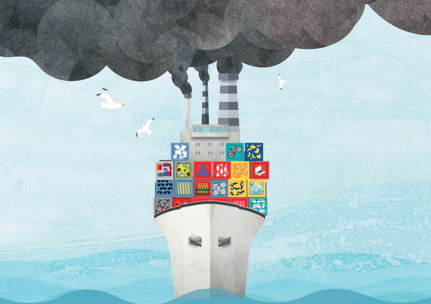

class: center, middle, inverse, title-slide .title[ # Industry-Level Climate Strategies: ] .subtitle[ ## A Computational Framework For Abatement in Maritime Shipping ] .author[ ### - <i>M.Sc. Candidate:<i/> Feryel Lassoued ] .institute[ ### - <i>Thesis Advisors:<i/> Dr. James Nolan, Dr. Patrick Lloyd-Smith & Dr. Sabine Liebenehm <br> <i> - Funding received from the SSHRC Green Shipping Research Group.<i> ] .date[ ### <br> .center[] ] --- # Climate Change Is Imminent ! - International Environmental agreements only consider domestic and land-based pollution. - Who's regulating international waters? - Maritime shipping is responsible for 2.89% of global emissions in 2018 (IMO, 2020). .equal-left[  ] .equal-right[  ] ??? - it goes without saying that climate change is imminent, and there s more pressure than ever to reach net zero but how do we go about dealing with it. - One way is to simply stop the economy but I m not sure that would go so well. - The next best thing comes in the form of IEA. - legally binding international treaties on climate change. - The only problem with that is that they only account for domestic land-based pollution, which severely restricting nations' remaining budgets to monitor other industries - Ocean shipping occurs in international waters, which makes the appropriation of its emissions to individual nations challenging. - Who is watching international waters? - Shipping for 3 % .... If the sector were a country, it would rank sixth between Germany and Japan . - the International Maritime Organization (IMO) is the specialized United Nations agencies responsible for monitering these emissions - In 2018, the IMO - introduced an initial strategy for the reduction of maritime green house gas (GHG) emissions --- # The Slow Steaming Debate - The initial GHG strategy includes a range of candidate short-term measures. The following to to be finalized and agreed to between 2018 and 2023: -- <br> - <i>” Consider and analyze the use of <b> Speed Optimization </b> and <b> Speed Reduction </b> as a measure, taking into account safety issues, distance travelled, distortion of the market or trade and that such measure does not impact on shipping’s capability to serve remote geographic areas (Initial IMO GHG Strategy, 2020) ,..., <b><font color="#21618C">However, what is meant by “Speed optimization” in that text is far from clear and hence may be subject to different interpretations. It turns out that the term “speed reduction” is not well defined either.</font>”</b></i> (Psaraftis ,2019b) .equal-left[ <img src="opos_1.png" width="100%" style="display: block; margin: auto;" /> ] .equal-right[ <img src="macron_debate.png" width="3304" height="100%" style="display: block; margin: auto;" /> - <i>"Speed reduction should be pursued as <b><font color="#21618C"> a regulatory option in its own right </font> </b> and not only as possible consequences of market-based instruments"</i>" (The Clean Shipping Coalition (CSC), Psaraftis (2019b)) ] ??? - Notice the inclusion of both Speed Optimization and Speed Reduction. - The reason for including both measures stems from a debate over how to incoprate spped as an abatement measure - On one hand, we have french president and Other NGOs like The Clean Shipping Coalition (CSC), advocating for “speed reduction as a regulatory option in its own right - and on the other hand , Other countries in South America Chile and Peru) are object to “speed reduction because of what it means to their agricultral and preshible goods exports to Asia - They suggested t “speed optimization” instead. - In a compromise,the imo flipped a coin and included both - However, what is meant by either is not clear or well defined and may be subject to different interpretations. - and we will be doing our own interperation for the containership industry --- # Container-Shipping Industry 1- Responsible for `\(20\%\)` of ocean shipping pollution (Psaraftis,2009) <br> -- 2- Yet, Only accounts for `\(4\%\)` of the world fleet in `\(2007\)` (Psaraftis, 2009) <br> -- 3- Higher speeds relative to those bulk cargo vessels (Psaraftis & Kontovas, 2013) <br> -- <div id="htmlwidget-e1796338772547a25779" style="width:504px;height:504px;" class="plotly html-widget"></div> <script type="application/json" data-for="htmlwidget-e1796338772547a25779">{"x":{"visdat":{"384b24974348":["function () ","plotlyVisDat"]},"cur_data":"384b24974348","attrs":{"384b24974348":{"alpha_stroke":1,"sizes":[10,100],"spans":[1,20],"x":{},"y":{},"type":"bar","inherit":true}},"layout":{"width":1000,"height":465,"margin":{"b":40,"l":60,"t":25,"r":10},"title":"<b> CO2 emissions per vessel category (million tonnes), world fleet, 2007 <\/b> ","xaxis":{"domain":[0,1],"automargin":true,"title":"<b>Source: Psaraftis and Kontovas (2009a)<\/b>","tickangle":-45,"type":"category","categoryorder":"array","categoryarray":["Chemical vessels","Container vessels","Crude Oil vessels","Dry Bulk vessels","General Cargo vessels","LNG vessels","LPG vessels","Reefer vessels","RO-RO vessels"]},"yaxis":{"domain":[0,1],"automargin":true,"title":""},"autosize":false,"font":{"size":12},"legend":{"orientation":"h","xanchor":"center","x":0.5},"plot_bgcolor":"rgba(0, 0, 0, 0)","paper_bgcolor":"rgba(0, 0, 0, 0)","fig_bgcolor":"rgba(0, 0, 0, 0)","hovermode":"closest","showlegend":false},"source":"A","config":{"modeBarButtonsToAdd":["hoverclosest","hovercompare"],"showSendToCloud":false},"data":[{"x":["Chemical vessels","Container vessels","Crude Oil vessels","Dry Bulk vessels","General Cargo vessels","LNG vessels","LPG vessels","RO-RO vessels","Reefer vessels"],"y":[130.08,269.45,106,151.03,83.37,19.94,14.91,42.87,21.3],"type":"bar","marker":{"color":"rgba(31,119,180,1)","line":{"color":"rgba(31,119,180,1)"}},"error_y":{"color":"rgba(31,119,180,1)"},"error_x":{"color":"rgba(31,119,180,1)"},"xaxis":"x","yaxis":"y","frame":null}],"highlight":{"on":"plotly_click","persistent":false,"dynamic":false,"selectize":false,"opacityDim":0.2,"selected":{"opacity":1},"debounce":0},"shinyEvents":["plotly_hover","plotly_click","plotly_selected","plotly_relayout","plotly_brushed","plotly_brushing","plotly_clickannotation","plotly_doubleclick","plotly_deselect","plotly_afterplot","plotly_sunburstclick"],"base_url":"https://plot.ly"},"evals":[],"jsHooks":[]}</script> ??? - Why containership ? - 3 reasons : - Looking at this graph that breaks down CO2 emissions from the world fleet by vessek category - containerships are the top CO2 emitters - signals the importance of speed on emissions --- # Why Aren't Ships Running At Full Speed ? Speed Maximization is not Profit Maximization! - Slow steaming saves money and the climate. - Started around 2007 to 2008, as a result : - An oversupply of shipping tonnage in the market - Declining freight rates - Increasing bunker prices. -- - <b><font color="#21618C">The cubic law of design and operational speed :</font></b> - A vessel sailing twice as fast, burns roughly 8 times as much fuel. - The Steaming Trade-off: <font color="#21618C"> <b> Time VS Fuel </b> </font> - The further you drop the speed: - The less you burn bunker fuel and the less GHG you emit - The longer the voyage time warrants additional ships to sustain throughput. ??? - When you talk about the speed of ships, you often find that maximum speed is far higher than their avg cruising speed. - So, why don't they just go around at full speed? - Going slow actually saves money and enviroment - It all . - Started around 2007 to 2008, as a result : - An oversupply of shipping tonnage in the market - Declining freight rates - Increasing bunker prices. - when firms began investigating ways to save money - In other words , The further you drop the speed: - The less you burn bunker fuel and the less pollution you emit - Howenver, The longer the voyage time, which warrants additional ships to sustain throughput. - There are downsides: - A typical 50-60 day Asia-to-Europe passage might become 100 days instead. - To maintain the same sailing throughput from Asia to Europe, you need to physically add more ships onto the route. --- # .meduim[The Container-Shipping Industry Continues To Concentrate] .equal-left[ <center> - Ongoing Pressure from the downstream supply chain to self regulate ? </center> <img src="IMOfails.png" width="80%" height="48%" style="display: block; margin: auto;" /> <img src="amazon_last.png" width="90%" height="69%" style="display: block; margin: auto;" /> ] -- .equal-right[ <center> - 3 Alliances control the market: <font color="#21618C"> <b>Economies of Scope, Economies of Scale </b></font></center> .center[<img src="market_structure.png" width="500px" height="500px">] ] ??? - IMO’s progress has remained painfully slow with ongoing pressure from the downstream supply chain to reach 0-emission shipping by 2015. - Pressure from giants like amazone - might there be an opportunity for the market to self regulate - conserding the oligopoly nature of the market , i would argue so - 3 alliance formed in 2017 control 80 % market share abnd capacity - why consolidate ? - Alliances facilitate low prices - broad service coverage through economies of scale and economies of scope. - Collaboration between carriers, - include increase utilization rates, - joint operation center, investemtens - vessel sharing agreement (VSA) to mitigate low vessel risk utilization rates. --- # Research Objectives 1. Project firms' business-as-usual (BAU) operations <font color="#21618C"> <b>in the absence of environmental policy </b> </font> -- 2. Model heterogeneous firms-level behavior under <font color="#21618C"> <b>various mandatory speed reduction policies</b> </font> - Speed reduction: a % decrease in speed relative to BAU levels -- 3. Model heterogeneous firms-level behavior under <font color="#21618C"> <b> various emission caps in an All Singleton and A Grand Coalition Market</b> </font> - Speed Optimization: Firms' response to Meet the Emission Caps. -- 4. Analyse the impact of the <font color="#21618C"> <b> stringency of emission caps </b> </font> on firms' incentive to join a coalition (alliance) -- ### Approach to reach these objectives : - Develop a flexible numerical simulation model in a market of heterogeneous shipping companies. ??? - Against this background, my research seeks to investigate both speed reduction and speed optimization . - I note that while there has been substantial research on industry-level cooperation for environmental initiatives in other sectors, little research if any, investigated cooperative abatement endeavours in maritime shipping. --- # The Simulation Model Development .panelset.sideways[ .panel[.panel-name[Assumptions] A Liner service with 5 heterogeneous firms, transporting cargo from 2018 to 2042: - <b>A1</b>: Different vessel capacity and fuel efficiency - <b>A2</b>: Identical fleet structure within firm - <b>A3</b>: Exogenous deterministic market demand with Equal market shares - <b>A4</b>: Firms must satisfy all demand - <b>A5</b>: Freight rates & Fuel prices are known and constant <iframe src="https://www.shipmap.org/" width="100%" height="300px" data-external="1"></iframe> .small[<i>University College London Energy Institute</i>] ] .panel[.panel-name[Market Demand] ### - Projected Market Demand *(Parry et al, 2018 ; IMF, 2021)* `$$\begin{aligned}Y_t^{Europe-Asia} = \biggl(\frac{GDP_t}{GDP_{2021}}\biggr)^{0.8^*} ~ Y_{2021}^{Europe-Asia}~ \forall t \geq 2021\end{aligned}$$` <div id="htmlwidget-0fc5d46b61b839e499f5" style="width:504px;height:504px;" class="plotly html-widget"></div> <script type="application/json" data-for="htmlwidget-0fc5d46b61b839e499f5">{"x":{"visdat":{"384b612aec99":["function () ","plotlyVisDat"]},"cur_data":"384b612aec99","attrs":{"384b612aec99":{"alpha_stroke":1,"sizes":[10,100],"spans":[1,20],"x":{},"y":{},"name":"Containership transport work in TEU/Firm","type":"scatter","mode":"lines+markers","line":{"width":1.5},"symbol":"o","inherit":true}},"layout":{"width":800,"height":380,"margin":{"b":40,"l":60,"t":25,"r":10},"title":"Firm level Demand (market shares 20% ~ 50.65MTEU), <br> Data between 2018 to 2021 is adapted from UNCTAD (2021) ","xaxis":{"domain":[0,1],"automargin":true,"title":"<b>Year<\/b>"},"yaxis":{"domain":[0,1],"automargin":true,"title":"Transport Work in TEU"},"autosize":false,"font":{"size":12},"legend":{"orientation":"h","xanchor":"center","x":0.5},"plot_bgcolor":"rgba(0, 0, 0, 0)","paper_bgcolor":"rgba(0, 0, 0, 0)","fig_bgcolor":"rgba(0, 0, 0, 0)","hovermode":"closest","showlegend":false},"source":"A","config":{"modeBarButtonsToAdd":["hoverclosest","hovercompare"],"showSendToCloud":false},"data":[{"x":[2018,2019,2020,2021,2022,2023,2024,2025,2026,2027,2028,2029,2030,2031,2032,2033,2034,2035,2036,2037,2038,2039,2040,2041,2042],"y":[1400000,1440000,1440000,1560000,1620858.07475903,1667373.10983732,1712573.51847927,1757638.19438706,1803888.70260672,1851356.24714103,1900072.85309519,1950071.3882833,2001385.58540348,2054050.06479636,2108100.35780253,2163572.93073466,2220505.20948028,2278935.60475209,2338903.53800268,2400449.46802107,2463614.91822927,2528442.50469703,2594975.96489372,2663260.18719694,2733341.24117746],"name":"Containership transport work in TEU/Firm","type":"scatter","mode":"lines+markers","line":{"color":"rgba(31,119,180,1)","width":1.5},"marker":{"color":"rgba(31,119,180,1)","symbol":"circle","line":{"color":"rgba(31,119,180,1)"}},"error_y":{"color":"rgba(31,119,180,1)"},"error_x":{"color":"rgba(31,119,180,1)"},"xaxis":"x","yaxis":"y","frame":null}],"highlight":{"on":"plotly_click","persistent":false,"dynamic":false,"selectize":false,"opacityDim":0.2,"selected":{"opacity":1},"debounce":0},"shinyEvents":["plotly_hover","plotly_click","plotly_selected","plotly_relayout","plotly_brushed","plotly_brushing","plotly_clickannotation","plotly_doubleclick","plotly_deselect","plotly_afterplot","plotly_sunburstclick"],"base_url":"https://plot.ly"},"evals":[],"jsHooks":[]}</script> ] .panel[.panel-name[Firm's Objective Function] ### - Carriers' Profit Maximization objective function `$$\begin{aligned} \max_{{ \color{#900C3F}{N_{i,t}} ,V_{i} }} \Pi_{i} = {} & \sum_{t=1}^{T} {(1+r)^{-t}} \bigg[ \color{#FF851B}{~\ \bigg( s_{i} \rho Y_t^{Europe-Asia} \bigg) ^{--> Revenues}} - \color{#0B5345} {\bigg( \eta^{HFO} ~\ \times F_{i,t}^{Main} \bigg) ^{--> Main ~ Fuel.~ Cost}} \\ & - \color{#21618C} {\bigg( \eta^{MGO} \times F_{i,t}^{Aux} \bigg)^{--> Auxilary ~ Fuel. ~ Cost} } - \color{#900C3F}{ \bigg( FC_{i,t} ~\ N_{i,t} \bigg)^{--> Fleet ~ Fixed ~ Cost}} \bigg] \scriptsize\forall i =1,.., N^{ firms} \end{aligned}$$` - Choice Variables: - `\(\small V_{i}\)` : Average sailing speed in nautical miles per hour (knots) - `\(\small N_{i,t}\)`: Annual number of ships deployed in the service - Parameters: - `\(\small \rho\)`: Freight rate ($/TEU) - `\(\small \eta^{*}\)`: Fuel Price ($/ton) - `\(\small s_{i}\)` : Market Share per firm - `\(\small F^{Main}_{i,t}\)`: main engines fuel consumption (ton) - `\(\small F^{Aux}_{i,t}\)`: auxiliary engines fuel consumption (ton) - `\(\small FC_{i}\)`:Annual Non-Fuel Fixed Operating Cost Per Vessel in ($/vessel) - `\(\small r\)`: discount rate (2%) (Weikard, & Zhu, 2017)] .panel[.panel-name[Firm's Fuel Consumption] - Hourly <b><font color="#0B5345">Main Engine</font></b> Fuel Consumption follows <b><font color="#0B5345"> The cubic law of design and operational speed </font></b>. `$$F= \phi_i \times \color{#0B5345} {V_{i}^3}$$` - The fleet’s main engine annual bunker fuel consumption costs `$$F_{i,t}^{Main} = N_{i,t}^{trip} \times F \times t_{sea_{i}}$$` - The fleet’s auxiliary annual engine bunker fuel consumption costs `$$F_{i,t}^{Aux} = N_{i,t}^{trip} \times F_A \times t_{sea_{i}}$$` <br> - **Parameters**: - `\(\phi_i\)` : Vessel Specific Main Engine Energy Efficiency Parameter - `\(N_{i,t}^{trip}\)` : Annual Required trips per firm to satisfy demand - `\(t_{sea_{i}}\)` : Average total sailing time in hours per ship - `\(F_A\)` : Hourly Auxiliary engine fuel consumption in ton/hour ] .panel[.panel-name[Firm's Operational & Capacity Constraints] - Each vessel is subject to a maximum carrying capacity `\(k_{i}\)` - Each vessel is subject to a maximum and minimum speed level - Each vessel can only sail for `\(\tau = 270*24=6480\)` hours per year (Buhaug et al., 2009) : - Number of trips by 1 vessel: `$$\small n_{i}^{trip} = \lceil \frac{\tau}{time_{i}} \rceil= \lceil \frac{270 \times 24}{t_{sea_{i} }+t_{port}} \rceil = \lceil \frac{6480}{\frac{d}{\color{#0B5345}{V_{i}}}+t_{port}}\rceil$$` - Number of required trips to satisfy demand: `\(\small N_{i,t}^{trip}= \lceil \frac{s_{i} \times Y_t^{Europe-Asia}}{k_{i}} \rceil\)` - The minimum number of vessels: `\(N_{{min}_{i,t}}^{vessel}= \frac{N_{i,t}^{trip}}{n_{i}^{trip}}\)` - Vessel Supply Constraint: `$$\begin{cases} \color{#900C3F}{N_{i,t}} \geq N_{{min}_{i,t}}^{vessel} \\ \color{#900C3F}{N_{i,t}} \in Z^+ \end{cases}$$` ] .panel[.panel-name[Firm's Emissions] - A bottom-up approach to emission inventory estimation using firms' vessel and fleet activity. - (BAU) emission paths in tonnes of each pollutant `\(\mbox{GHG} \in \{ CO_2, SO_x \}\)`: `$$\overline{e^{GHG}_{i,t}} [ tonnes _{(GHG)} ] = \epsilon^{GHG}_{HFO} \times F_{i,t}^{Main} + \epsilon^{GHG }_{MGO} \times F_{i,t}^{Aux}\\ = N_{i,t}^{trip} \times d \times \big( \epsilon^{GHG}_{HFO} \times \phi_i \times \color{#900C3F} {V_{i}^2} + \epsilon^{GHG }_{MGO} \times \frac{F_A}{\color{#900C3F}{V_{i}}} \big)$$` <br> | fuel type | HFO (3.55%)| MGO (0.1%) | |:-------------------|:------------|:------------| | Carbon Emission Factor estimate `\(\epsilon^{CO2}_{fuel}\)` | 3.114 (ton/ton of Fuel) | 3.206 (ton/ton of Fuel) | | Sulfur Emission Factor estimate `\(\epsilon^{HFO }_{MGO}\)`| 0.07 (ton/ton of Fuel) | 0.002 (ton/ton of Fuel)| <center>.small[Emission factors for different bunker fuels (IMO, 2015)]</center> ] ] ??? 1. <b>Assum</b> - Like most maritime research, our simulation remains governed by restrictive assumptions and simplifications. - We Consider a marketplace of 5 heterogeneous firms, transorting Cargos from europe to asia - Prioir to depicting the components of the simulation model, I thought I would share this - cool visualisation the that sums up the level of globalisation of modern shipping 1. <b>Demand</b> - With that level of globalisation in mind, it shouldn't surprising - that end levraging real gdp projected with 0.8 income elsasrisity from - the IMF to project market demand - here we obseve the estimated fim level demand using IMF's model and data. 2. <b>Objective</b> - then, Assumin a 2% discount rarte, we put our objective funtion into a discounted profit maximisation problem. - wherbye firms' choose the BAU average speed level and number of vessels in each period to satisfy demand - revenues are based on the previously depicted market demand - the cost structure is broken down into 3 compenents : - Main engine fuel consumption - Auxilary engine fuel consumption - the fleet structure Operating cost - Main engine is assumed to be burning HFo WHILE Auxilary engine burns MGO 3. <b>Fuel</b> - So how do we go about estimating ships fuel consumption. - annual fuel consumption for each engine is simply # of trips to satisfy demand X length of each trip X hourly fuel consumption rate. - The hourly consumption rate differes betwen the 2 engines - such that only main engine follows the cubic law of design and operational speed 4. <b>Constraint</b> - However our shipper's decision making process is subject to few constraint: - most importantly, a vessel can only sail 270 days w year, which consttraints the # of trips a vessel can make in a year - then using the number of required trips to staisfy demand, we can - derive the vessel supply constraint 5. <b>Emission</b> - Finally, projected firms emssions are fuel consumption multipled by their carbon enission factor estimate --- # The Simulation Model Data and Methodology <center> Firm Specific Simulation Parameters (Brahimi et al., 2021) </center> .medium[ | Parameters | Notation | Firm 1 | Firm 2 | Firm 3 |Firm 4 |Firm 5| |:------------------------|:------------|:------------|:------------|:------------|:------------|:------------| | Vessel capacity `\(\scriptsize (TEU)\)`| `\(\scriptsize k_i\)` | 14,000 |12,000| 10,000 |8,000 | 6,000 | | Main Engine Fuel Efficiency Energy `\(\scriptsize (ton/hour) \times knot^{-3} \times 10^{-6} )\)`| `\(\scriptsize \phi_i\)` |0.80 | 0.56 | 0.60 | 0.50 | 0.33| | Aux Engine Fuel Efficiency `\(\scriptsize 10^{-6} \times ton/hour\)` | `\(\scriptsize F_{A_{i}}\)` |224.00|196.00|144.00| 144.00|167.70| | Min speed `\(\scriptsize (knots)\)` | `\(\scriptsize V_i^{max}\)` | 12 | 12 | 12 |12 | 12 | | Max speed `\(\scriptsize (knots)\)` | `\(\scriptsize V_i^{min}\)` | 28 | 28 | 28 |28 | 28 | | Fixed Operating Cost `\(\scriptsize (million~ USD/year)\)` | `\(\scriptsize FC_{i}\)` | 18.25 | 16.74|15.24 | 13.73 | 12.22 | .equal-left[ - Service/trade characteristics (Doudnikoff and Lacoste, 2014) - Cycle Distance: `\(\small d = 23,000 ~ nm\)` - Average Port time : `\(\small T_{port} = 10 ~ days\)`] .equal-right[ - Economic parameters (Ship & Bunker, 2021) - Average Freight rate : `\(\small \rho_{t} = 822~ USD/TEU\)` - Average (HFO) fuel Price: `\(\small \eta^{HFO} = 422.5 USD/tonne\)` - Average (MGO) fuel Price: `\(\small \eta^{MGO} = 597 USD/tonne\)` ] - <b><font color="#21618C"> Mixed-Integer Nonlinear Constrained Model </font></b> capturing the slow steaming trade off - A meta heuristic search methodology: <b><font color="#21618C">Genetic Algorithms</font></b> ] ??? - To solve this model, data was collected from multiple sources - what i would like to emphasize in this slide , is the level of hertegenouty between these firms - from firm 1 to 5, capacity decreases by 2.000 TEU - per vessel fixed costs decreases too but not at a steady rate - in terms of fuel efficieny, 5 is most efficent 2. - How do we go about solving this model, - well since we can't have 1.5 ships runing at 3,3 trips to meed demand, this --- # .meduim[Result 1: BAU projections without an Environmental Policy] <div id="htmlwidget-a4b86b08fadc1e71241c" style="width:100%;height:auto;" class="datatables html-widget"></div> <script type="application/json" data-for="htmlwidget-a4b86b08fadc1e71241c">{"x":{"filter":"none","vertical":false,"caption":"<caption>BAU projections<\/caption>","data":[["1","2","3","4","5"],["16.66697","16.66671","16.66683","16.6667","21.78"],["14,000","12,000","10,000","8,000","6,000"],["0.80","0.56","0.60","0.50","0.33"],["224.00","196.00","144.00","144.00","167.70"],["246.32","231.99","212.12","164.96","104.4"],["249.82","267.52","291.72","328.26","311.68"],["128.07","124.71","120.37","130.99","208.12"],["1.22","1.18","1.14","1.24","1.98"],["0.0258","0.0250","0.0243","0.0262","0.0425"]],"container":"<table class=\"display\">\n <thead>\n <tr>\n <th>Firm<\/th>\n <th>Optimal Speed (knots)<\/th>\n <th>Vessel Capacity (TEU)<\/th>\n <th>Main Energy<\/th>\n <th>Aux Energy<\/th>\n <th>Net Present Value ($/TEU)<\/th>\n <th>Operating Costs ($/TEU)<\/th>\n <th>Fuel Costs ($/TEU)<\/th>\n <th>Carbon Emissions (ton/TEU)<\/th>\n <th>Sulfur Emissions (ton/TEU)<\/th>\n <\/tr>\n <\/thead>\n<\/table>","options":{"info":false,"lengthChange":false,"searching":false,"paging":false,"scrollX":"400px","dom":"t","columnDefs":[],"order":[],"autoWidth":false,"orderClasses":false,"rowCallback":"function(row, data, displayNum, displayIndex, dataIndex) {\n}"}},"evals":["options.rowCallback"],"jsHooks":[]}</script> .small[<i> - Firm-level output = 50.65MTEU - The fuel parameters for the main and auxiliary engines are in ((10<sup>-6</sup>ton/hour).knot<sup>-3</sup>) and in (10<sup>-6</sup>ton/hour)</i>] <b><font color="#21618C"> Vessel capacity, engine efficiency, fuel and operational costs</font></b> promote speed and fleet structure equilibrium. Simulation aligns with the `\(16.4\)` average speed in the European–Far East shipping market (Cheaitou & Cariou, 2019). ??? - Solving for the first objective, this table shows firms projected Business-As-Usual operations - considering firms ' NPV, our results allign with economies of scale theory, such larger container ships provide firms with a competitive advantage and higher profit margins - looking of the dynamic of the model : - I would like you to consider firm 5'results speratly, simply because this firm requires nearly double the round trips to satisfy the same demand, while being very efficient at burning fuel and hence the reason why it solved for a higher 21.78 speed relative to 16.67 and hence the highest emission rate per teu - On the other hand, 4 didn't need to run as many required trips as 5 , but solved for almost the same fleet structure as 5. However, given that the firms' main engine efficieny isnot as efficient as 5, firm didn t have as much incentive to speed up since it was able to satisfy the demand - Rememeber how slow steaming began, if we can satisfy demand without needing the additional ships might as well go slower . - 1-2-3 had slighty similar # of required trips, fleet struture and speed, which renderd emissions and fuel consumption to be driven by avg engine efficiency - In conclusion, Each firm evalutes the tradeoff betwee fuel consuption costs and fleet size, per their structure. - Speed and emission are not straightfowrd and i want you to keep this in mind as we move to my second research objective --- # .meduim[Result 2: Mandatory Speed Reduction Policies] .panelset.sideways[ .panel[.panel-name[Mandatory Speed Reductions] <div id="htmlwidget-452c77fb04ef0ec3d45b" style="width:700px;height:400px;" class="plotly html-widget"></div> <script type="application/json" data-for="htmlwidget-452c77fb04ef0ec3d45b">{"x":{"data":[{"x":[28,27,26,25,24,23,22,21,20,19,18,17,16,15,14,13,12,11,10,9,8,6.99999999999999,5.99999999999999,4.99999999999999,3.99999999999999,3,2,1],"y":[-12.5281734023009,-13.1454155300988,-13.7743368814852,-14.4148536202656,-15.0668863226767,-15.7303596908652,-16.405202288406,-17.0913462959083,-17.7887272849508,-18.4972840087626,-19.2169582082202,-19.9476944318686,-20.6894398687986,-21.4421441933198,-22.205759420472,-22.9802397714997,-23.7655415485001,-24.5616230175213,-25.3684442994533,-26.1859672681142,-27.0141554549823,-27.8529739600743,-28.7023893685126,-29.5623696723619,-30.4328841973508,-31.3139035341263,-32.2053994737172,-33.1073449469087],"mode":"lines+markers","line":{"color":"rgba(27,158,119,1)","width":1.5},"marker":{"color":"rgba(27,158,119,1)","opacity":2,"size":1,"line":{"color":"rgba(27,158,119,1)"}},"legendgroup":"firm 1","showlegend":true,"type":"scatter","name":"firm 1","textfont":{"color":"rgba(27,158,119,1)"},"error_y":{"color":"rgba(27,158,119,1)"},"error_x":{"color":"rgba(27,158,119,1)"},"xaxis":"x","yaxis":"y","frame":null},{"x":[28,27,26,25,24,23,22,21,20,19,18,17,16,15,14,13,12,11,10,9,8,6.99999999999999,5.99999999999999,4.99999999999999,3.99999999999999,3,2,1],"y":[-16.1675280471692,-16.7989447366107,-17.4425004297465,-18.0981042914794,-18.7656702675068,-19.4451167738796,-20.136366410441,-20.8393456960292,-21.5539848235408,-22.2802174331365,-23.0179804020427,-23.7672136495467,-24.5278599559225,-25.2998647941369,-26.0831761732979,-26.8777444928993,-27.6835224070031,-28.5004646975792,-29.3285281562871,-30.1676714740545,-31.0178551378554,-31.8790413341489,-32.7511938584811,-33.634278030796,-34.5282606160398,-35.4331097496766,-36.3487948677638,-37.2752866412655],"mode":"lines+markers","line":{"color":"rgba(217,95,2,1)","width":1.5},"marker":{"color":"rgba(217,95,2,1)","opacity":2,"size":1,"line":{"color":"rgba(217,95,2,1)"}},"legendgroup":"firm 2","showlegend":true,"type":"scatter","name":"firm 2","textfont":{"color":"rgba(217,95,2,1)"},"error_y":{"color":"rgba(217,95,2,1)"},"error_x":{"color":"rgba(217,95,2,1)"},"xaxis":"x","yaxis":"y","frame":null},{"x":[28,27,26,25,24,23,22,21,20,19,18,17,16,15,14,13,12,11,10,9,8,6.99999999999999,5.99999999999999,4.99999999999999,3.99999999999999,3,2,1],"y":[-22.1823784832447,-22.8624444089388,-23.5551971752214,-24.2605492094835,-24.9784175482008,-25.7087235376426,-26.4513925576027,-27.2063537661133,-27.9735398633049,-28.7528868727584,-29.5443339388557,-30.3478231387793,-31.1632993079415,-31.9907098777349,-32.8300047246037,-33.6811360295235,-34.5440581470617,-35.4187274832659,-36.3051023816929,-37.2031430169517,-38.1128112951901,-39.0340707610012,-39.9668865102719,-40.9112251085362,-41.8670545144307,-42.8343440078852,-43.8130641227102,-44.8031865832691],"mode":"lines+markers","line":{"color":"rgba(117,112,179,1)","width":1.5},"marker":{"color":"rgba(117,112,179,1)","opacity":2,"size":1,"line":{"color":"rgba(117,112,179,1)"}},"legendgroup":"firm 3","showlegend":true,"type":"scatter","name":"firm 3","textfont":{"color":"rgba(117,112,179,1)"},"error_y":{"color":"rgba(117,112,179,1)"},"error_x":{"color":"rgba(117,112,179,1)"},"xaxis":"x","yaxis":"y","frame":null},{"x":[28,27,26,25,24,23,22,21,20,19,18,17,16,15,14,13,12,11,10,9,8,6.99999999999999,5.99999999999999,4.99999999999999,3.99999999999999,3,2,1],"y":[-33.6668120985427,-34.5889768170542,-35.5291713605288,-36.487255090577,-37.4630947708298,-38.456564086288,-39.4675431996446,-40.4959183413045,-41.5415814301523,-42.6044297224115,-43.6843654861972,-44.781295699595,-45.8951317703054,-47.0257892750781,-48.1731877173259,-49.3372503014538,-50.5179037225761,-51.7150779704081,-52.9287061462339,-54.1587242919402,-55.4050712302013,-56.6676884149741,-57.946519791537,-59.2415116653667,-60.5526125792119,-61.8797731977698,-63.2229461994235,-64.5820861745406],"mode":"lines+markers","line":{"color":"rgba(231,41,138,1)","width":1.5},"marker":{"color":"rgba(231,41,138,1)","opacity":2,"size":1,"line":{"color":"rgba(231,41,138,1)"}},"legendgroup":"firm 4","showlegend":true,"type":"scatter","name":"firm 4","textfont":{"color":"rgba(231,41,138,1)"},"error_y":{"color":"rgba(231,41,138,1)"},"error_x":{"color":"rgba(231,41,138,1)"},"xaxis":"x","yaxis":"y","frame":null},{"x":[44,43,42,41,40,39,38,37,36,35,34,33,32,31,30,29,28,27,26,25,24,23,22,21,20,19,18,17,16,15,14,13,12,11,10,9,8,6.99999999999999,5.99999999999999,4.99999999999999,3.99999999999999,3,2,1],"y":[-79.2473760737272,-80.9520279026042,-82.7078218254929,-84.5140531879284,-86.37006431241,-88.2752406478306,-90.2290072915417,-92.23082584265,-94.2801915503184,-96.3766307252994,-98.519698386785,-100.708976119985,-102.944070122746,-105.224609422021,-107.550244243227,-109.920644517389,-112.335498512698,-114.794511578539,-117.297404991359,-119.84391489286,-122.433791312022,-1.80599855242075,-4.48190920347592,-7.20051110578422,-9.96160148328142,-12.7649875735358,-15.610486017161,-18.4979222913681,-21.4271301839766,-24.3979513045559,-27.4102346296723,-30.4638360794981,-33.5586181232888,-36.6944494114566,-39.8712044321737,-43.0887631906152,-46.3470109091229,-49.6458377467119,-52.9851385364818,-56.3648125396121,-59.7847632147332,-63.2448980015632,-66.7451281177904,-70.2853683682675],"mode":"lines+markers","line":{"color":"rgba(102,166,30,1)","width":1.5},"marker":{"color":"rgba(102,166,30,1)","opacity":2,"size":1,"line":{"color":"rgba(102,166,30,1)"}},"legendgroup":"firm 5","showlegend":true,"type":"scatter","name":"firm 5","textfont":{"color":"rgba(102,166,30,1)"},"error_y":{"color":"rgba(102,166,30,1)"},"error_x":{"color":"rgba(102,166,30,1)"},"xaxis":"x","yaxis":"y","frame":null},{"x":[28,27,26,25,24,23,22,21,20,19,18,17,16,15,14,13,12,11,10,9,8,6.99999999999999,5.99999999999999,4.99999999999999,3.99999999999999,3,2,1],"y":[-43.0797209204341,-41.8253820075855,-40.5492093103508,-39.2513228690789,-37.9318364062056,-36.5908577365077,-35.2284891457992,-33.8448277408653,-32.4399657731522,-31.0139909384789,-29.5669866548197,-28.0990323200055,-26.6102035510183,-25.1005724063936,-23.5702075931073,-22.0191746591938,-20.4475361732314,-18.8553518917275,-17.2426789153447,-15.6095718348264,-13.9560828674053,-12.2822619844118,-10.5881570307365,-8.8738138367486,-7.13927632321824,-5.38458659974995,-3.60978505718891,-1.81491045442687],"mode":"lines+markers","line":{"color":"rgba(27,158,119,1)","width":1.5},"marker":{"color":"rgba(27,158,119,1)","opacity":2,"size":1,"line":{"color":"rgba(27,158,119,1)"}},"legendgroup":"firm 1","showlegend":false,"type":"scatter","name":"firm 1","textfont":{"color":"rgba(27,158,119,1)"},"error_y":{"color":"rgba(27,158,119,1)"},"error_x":{"color":"rgba(27,158,119,1)"},"xaxis":"x","yaxis":"y2","frame":null},{"x":[28,27,26,25,24,23,22,21,20,19,18,17,16,15,14,13,12,11,10,9,8,6.99999999999999,5.99999999999999,4.99999999999999,3.99999999999999,3,2,1],"y":[-42.8307072728905,-41.5859588333664,-40.3192867251543,-39.0308168724698,-37.7206685719383,-36.3889549229578,-35.0357832249572,-33.6612553444831,-32.2654680547545,-30.8485133500662,-29.4104787371864,-27.9514475056895,-26.4714989789799,-24.9707087475958,-23.4491488862363,-21.9068881558215,-20.343992191775,-18.7605236796137,-17.1565425188315,-15.5321059759775,-13.8872688277509,-12.222083494864,-10.5366001673601,-8.83086692201786,-7.1049298324167,-5.35883307219458,-3.59261901198396,-1.80632831047238],"mode":"lines+markers","line":{"color":"rgba(217,95,2,1)","width":1.5},"marker":{"color":"rgba(217,95,2,1)","opacity":2,"size":1,"line":{"color":"rgba(217,95,2,1)"}},"legendgroup":"firm 2","showlegend":false,"type":"scatter","name":"firm 2","textfont":{"color":"rgba(217,95,2,1)"},"error_y":{"color":"rgba(217,95,2,1)"},"error_x":{"color":"rgba(217,95,2,1)"},"xaxis":"x","yaxis":"y2","frame":null},{"x":[28,27,26,25,24,23,22,21,20,19,18,17,16,15,14,13,12,11,10,9,8,6.99999999999999,5.99999999999999,4.99999999999999,3.99999999999999,3,2,1],"y":[-43.3022967819403,-42.0393856165926,-40.7547210081418,-39.4484177377605,-38.1205845455067,-36.7713245226044,-35.4007354735481,-34.0089102507059,-32.5959370638278,-31.1618997666263,-29.7068781223894,-28.2309480503908,-26.734181854701,-25.2166484368458,-23.6784134936289,-22.1195397013115,-20.5400868872335,-18.9401121898659,-17.3196702081918,-15.6788131412394,-14.0175909185136,-12.3360513220139,-10.6342401004629,-8.9122010763217,-7.16997624611516,-5.40760587455282,-3.62512858288656,-1.82258143191383],"mode":"lines+markers","line":{"color":"rgba(117,112,179,1)","width":1.5},"marker":{"color":"rgba(117,112,179,1)","opacity":2,"size":1,"line":{"color":"rgba(117,112,179,1)"}},"legendgroup":"firm 3","showlegend":false,"type":"scatter","name":"firm 3","textfont":{"color":"rgba(117,112,179,1)"},"error_y":{"color":"rgba(117,112,179,1)"},"error_x":{"color":"rgba(117,112,179,1)"},"xaxis":"x","yaxis":"y2","frame":null},{"x":[28,27,26,25,24,23,22,21,20,19,18,17,16,15,14,13,12,11,10,9,8,6.99999999999999,5.99999999999999,4.99999999999999,3.99999999999999,3,2,1],"y":[-42.5679297339933,-41.3333018681886,-40.0766554811611,-38.798122706216,-37.4978287222739,-36.1758922054544,-34.8324257459223,-33.4675362330744,-32.0813252118379,-30.6738892125755,-29.2453200568518,-27.7957051410957,-26.3251277000014,-24.8336670513365,-23.3213988236697,-21.7883951683946,-20.2347249572957,-18.6604539667964,-17.0656450499236,-15.4503582969339,-13.8146511854638,-12.1585787209935,-10.4821935683445,-8.78554617487209,-7.06868488595849,-5.33165605336181,-3.5745041369317,-1.7972718001603],"mode":"lines+markers","line":{"color":"rgba(231,41,138,1)","width":1.5},"marker":{"color":"rgba(231,41,138,1)","opacity":2,"size":1,"line":{"color":"rgba(231,41,138,1)"}},"legendgroup":"firm 4","showlegend":false,"type":"scatter","name":"firm 4","textfont":{"color":"rgba(231,41,138,1)"},"error_y":{"color":"rgba(231,41,138,1)"},"error_x":{"color":"rgba(231,41,138,1)"},"xaxis":"x","yaxis":"y2","frame":null},{"x":[44,43,42,41,40,39,38,37,36,35,34,33,32,31,30,29,28,27,26,25,24,23,22,21,20,19,18,17,16,15,14,13,12,11,10,9,8,6.99999999999999,5.99999999999999,4.99999999999999,3.99999999999999,3,2,1],"y":[-61.6114013671703,-60.6849299656062,-59.7342556407146,-58.7596406546227,-57.7613297853154,-56.7395517597625,-55.6945205483551,-54.6264365360625,-53.5354875837934,-52.4218499917855,-51.2856893754132,-50.1271614625661,-48.9464128206697,-47.7435815204871,-46.5187977430235,-45.272184335143,-44.0038573188839,-42.7139263589125,-41.4024951920754,-40.0696620225872,-38.7155198860198,-37.3401569849284,-35.9436569986601,-34.5260993696331,-33.0875595681447,-31.6281093375638,-30.1478169215831,-28.6467472750423,-27.1249622596937,-25.5825208261482,-24.0194791831278,-22.4358909550456,-20.8318073288412,-19.2072771909178,-17.5623472549494,-15.8970621812616,-14.211464688427,-12.50559565766,-10.779494230549,-9.03319790061541,-7.26674259915066,-5.48016277574337,-3.67349147387661,-1.84676040194314],"mode":"lines+markers","line":{"color":"rgba(102,166,30,1)","width":1.5},"marker":{"color":"rgba(102,166,30,1)","opacity":2,"size":1,"line":{"color":"rgba(102,166,30,1)"}},"legendgroup":"firm 5","showlegend":false,"type":"scatter","name":"firm 5","textfont":{"color":"rgba(102,166,30,1)"},"error_y":{"color":"rgba(102,166,30,1)"},"error_x":{"color":"rgba(102,166,30,1)"},"xaxis":"x","yaxis":"y2","frame":null},{"x":[28,27,26,25,24,23,22,21,20,19,18,17,16,15,14,13,12,11,10,9,8,6.99999999999999,5.99999999999999,4.99999999999999,3.99999999999999,3,2,1],"y":[-48.0105334753957,-46.5662900061372,-45.1019925852404,-43.6176447444039,-42.1132498294471,-40.5888110123809,-39.0443313025489,-37.4798135569227,-35.8952604896255,-34.2906746807498,-32.6660585845296,-31.0214145369228,-29.3567447626513,-27.672051381744,-25.9673364156239,-24.2426017927749,-22.4978493540228,-20.7330808574594,-18.9482979830392,-17.1435023368725,-15.3186954552388,-13.4738788083409,-11.60905380382,-9.72422179004803,-7.81938405921481,-5.89454185022397,-3.94969635141169,-1.98484870310045],"mode":"lines+markers","line":{"color":"rgba(27,158,119,1)","width":1.5},"marker":{"color":"rgba(27,158,119,1)","opacity":2,"size":1,"line":{"color":"rgba(27,158,119,1)"}},"legendgroup":"firm 1","showlegend":false,"type":"scatter","name":"firm 1","textfont":{"color":"rgba(27,158,119,1)"},"error_y":{"color":"rgba(27,158,119,1)"},"error_x":{"color":"rgba(27,158,119,1)"},"xaxis":"x","yaxis":"y3","frame":null},{"x":[28,27,26,25,24,23,22,21,20,19,18,17,16,15,14,13,12,11,10,9,8,6.99999999999999,5.99999999999999,4.99999999999999,3.99999999999999,3,2,1],"y":[-48.0027435865513,-46.5588001358738,-45.0947999217091,-43.6107466598208,-42.1066438704056,-40.5824948907931,-39.0383028871676,-37.4740708654003,-35.889801681069,-34.2854980487351,-32.6611625505425,-31.0167976441943,-29.3524056703604,-27.6679888595612,-25.9635493385722,-24.2390891363859,-22.4946101897681,-20.7301143484389,-18.9456033799084,-17.1410789739941,-15.3165427470434,-13.4719962458829,-11.6074409515173,-9.72287828259265,-7.81830959864537,-5.89373620314804,-3.94915934637052,-1.98458022806663],"mode":"lines+markers","line":{"color":"rgba(217,95,2,1)","width":1.5},"marker":{"color":"rgba(217,95,2,1)","opacity":2,"size":1,"line":{"color":"rgba(217,95,2,1)"}},"legendgroup":"firm 2","showlegend":false,"type":"scatter","name":"firm 2","textfont":{"color":"rgba(217,95,2,1)"},"error_y":{"color":"rgba(217,95,2,1)"},"error_x":{"color":"rgba(217,95,2,1)"},"xaxis":"x","yaxis":"y3","frame":null},{"x":[28,27,26,25,24,23,22,21,20,19,18,17,16,15,14,13,12,11,10,9,8,6.99999999999999,5.99999999999999,4.99999999999999,3.99999999999999,3,2,1],"y":[-48.0174575330573,-46.5729473917069,-45.1083857980354,-43.6237761201349,-42.1191215488294,-40.5944251091859,-39.0496896711396,-37.4849179593126,-35.900112562096,-34.2952759400589,-32.670410433743,-31.0255182708923,-29.3606015731683,-27.6756623623892,-25.9707025663352,-24.2457240241532,-22.5007284913922,-20.7357176447002,-18.9506930862077,-17.1456563476216,-15.3206088940531,-13.4755521275977,-11.6104873906872,-9.72541596923027,-7.82033909555571,-5.89525795117487,-3.95017366937395,-1.98508733764998],"mode":"lines+markers","line":{"color":"rgba(117,112,179,1)","width":1.5},"marker":{"color":"rgba(117,112,179,1)","opacity":2,"size":1,"line":{"color":"rgba(117,112,179,1)"}},"legendgroup":"firm 3","showlegend":false,"type":"scatter","name":"firm 3","textfont":{"color":"rgba(117,112,179,1)"},"error_y":{"color":"rgba(117,112,179,1)"},"error_x":{"color":"rgba(117,112,179,1)"},"xaxis":"x","yaxis":"y3","frame":null},{"x":[28,27,26,25,24,23,22,21,20,19,18,17,16,15,14,13,12,11,10,9,8,6.99999999999999,5.99999999999999,4.99999999999999,3.99999999999999,3,2,1],"y":[-47.9944730020254,-46.5508480833683,-45.0871634158628,-43.6034229106953,-42.0996302732005,-40.5757890162278,-39.0319024724807,-37.4679738059183,-35.8840060223016,-34.2800019789589,-32.6559643938369,-31.0118958538966,-29.3477988229105,-27.663675648709,-25.959528569921,-24.2353597222497,-22.4911711443213,-20.7269647831381,-18.9427424991689,-17.1385060711038,-15.3142572002987,-13.4699975149324,-11.6057285739,-9.72145187045859,-7.81716883564647,-5.89288084148986,-3.94858920401392,-1.98429518607119],"mode":"lines+markers","line":{"color":"rgba(231,41,138,1)","width":1.5},"marker":{"color":"rgba(231,41,138,1)","opacity":2,"size":1,"line":{"color":"rgba(231,41,138,1)"}},"legendgroup":"firm 4","showlegend":false,"type":"scatter","name":"firm 4","textfont":{"color":"rgba(231,41,138,1)"},"error_y":{"color":"rgba(231,41,138,1)"},"error_x":{"color":"rgba(231,41,138,1)"},"xaxis":"x","yaxis":"y3","frame":null},{"x":[44,43,42,41,40,39,38,37,36,35,34,33,32,31,30,29,28,27,26,25,24,23,22,21,20,19,18,17,16,15,14,13,12,11,10,9,8,6.99999999999999,5.99999999999999,4.99999999999999,3.99999999999999,3,2,1],"y":[-68.4354504050118,-67.3113735903513,-66.1671744602322,-65.0028606471308,-63.8184392746916,-62.6139169994348,-61.3893000484277,-60.1445942533683,-58.8798050814734,-57.5949376635158,-56.2899968193122,-54.9649870809292,-53.6199127138413,-52.2547777362488,-50.8695859367409,-49.464340890465,-48.0390459739493,-46.5937043787065,-45.1283191237355,-43.6428930670215,-42.1374289161297,-40.6119292379726,-39.0663964678259,-37.5008329176604,-35.9152407838483,-34.3096221542991,-32.6839790150729,-31.038313256516,-29.3726266789584,-27.6869209980086,-25.9811978494794,-24.2554587939737,-22.509705321158,-20.7439388537476,-18.9581607512257,-17.1523723133182,-15.3265747832413,-13.4807693507394,-11.6149571549292,-9.72913928696525,-7.82331679253668,-5.89749067421178,-3.95166189363758,-1.98583137360668],"mode":"lines+markers","line":{"color":"rgba(102,166,30,1)","width":1.5},"marker":{"color":"rgba(102,166,30,1)","opacity":2,"size":1,"line":{"color":"rgba(102,166,30,1)"}},"legendgroup":"firm 5","showlegend":false,"type":"scatter","name":"firm 5","textfont":{"color":"rgba(102,166,30,1)"},"error_y":{"color":"rgba(102,166,30,1)"},"error_x":{"color":"rgba(102,166,30,1)"},"xaxis":"x","yaxis":"y3","frame":null}],"layout":{"xaxis":{"domain":[0,1],"automargin":true,"title":"% mandatory speed reduction","anchor":"y3"},"yaxis3":{"domain":[0,0.283333333333333],"automargin":true,"title":"%Δ in sulfur <br> emissions","anchor":"x"},"yaxis2":{"domain":[0.383333333333333,0.616666666666667],"automargin":true,"title":"%Δ in carbon <br> emissions","anchor":"x"},"yaxis":{"domain":[0.716666666666667,1],"automargin":true,"title":"%Δ in profit","anchor":"x"},"annotations":[],"shapes":[],"images":[],"width":700,"height":400,"margin":{"b":40,"l":60,"t":25,"r":10},"autosize":false,"font":{"size":12},"legend":{"orientation":"h","xanchor":"center","x":0.5,"y":-0.2},"plot_bgcolor":"rgba(0, 0, 0, 0)","paper_bgcolor":"rgba(0, 0, 0, 0)","fig_bgcolor":"rgba(0, 0, 0, 0)","title":{"text":"Economic and Enviromental response to mandatory speed reduction (%) ","y":-1},"hovermode":"closest","showlegend":true},"attrs":{"384b42681d00":{"x":{},"y":{},"mode":"lines+markers","line":{"width":1.5},"marker":{"opacity":2,"size":1},"legendgroup":{},"showlegend":true,"color":{},"colors":"Dark2","alpha_stroke":1,"sizes":[10,100],"spans":[1,20],"symbols":"x","type":"scatter"},"384b41480d0f":{"x":{},"y":{},"mode":"lines+markers","line":{"width":1.5},"marker":{"opacity":2,"size":1},"legendgroup":{},"showlegend":false,"color":{},"colors":"Dark2","alpha_stroke":1,"sizes":[10,100],"spans":[1,20],"symbols":"x","type":"scatter"},"384b61517544":{"x":{},"y":{},"mode":"lines+markers","line":{"width":1.5},"marker":{"opacity":2,"size":1},"legendgroup":{},"showlegend":false,"color":{},"colors":"Dark2","alpha_stroke":1,"sizes":[10,100],"spans":[1,20],"symbols":"x","type":"scatter"}},"source":"A","config":{"modeBarButtonsToAdd":["hoverclosest","hovercompare"],"showSendToCloud":false},"highlight":{"on":"plotly_click","persistent":false,"dynamic":false,"selectize":false,"opacityDim":0.2,"selected":{"opacity":1},"debounce":0},"subplot":true,"shinyEvents":["plotly_hover","plotly_click","plotly_selected","plotly_relayout","plotly_brushed","plotly_brushing","plotly_clickannotation","plotly_doubleclick","plotly_deselect","plotly_afterplot","plotly_sunburstclick"],"base_url":"https://plot.ly"},"evals":[],"jsHooks":[]}</script> - Across diverse routes and containerships, firms respond to mandatory speed reduction policies with a range of optimal speeds. - Would such a policy consider firms, vessels, and shipping routes heterogeneity ? ] .panel[.panel-name[Shortcomings] 1. Identification of baseline speed levels and appropriate benchmarks - During depressed market conditions, the policy is redundant. - Requires extensive knowledge of vessel design and firms operational procedures. - How to segment the market under heterogeneous policy treatment ? 2. Enforcement, Monitoring and Data Collection in a heterogeneous international market 3. Hindering innovation and distorting competition - Targets vessels that are efficient at burning fuel - Does not encourage e-fuel technologies <center> - <font color="#21618C"> <b> But wait, are we shifting regulatory focus ?! </b></font> </center> ] ] ??? Considering the second objective of our thesis, which is to anlyse speed reduction policies, the following chart simulates 1. Decreasing firms' average speed is clearly effective in decreasing both carbon and sulfur emissions. 2. incurred costs diverges across these firms - signals that a uniform speed regulation affects firms' bottom line differently since speed is a key factor in firm profit margins. - More precisely, we brake down the shortcomings of the policies into 1. vessel sizes and/or type, market routes and/or weather and market conditions or other parameters? 2. collecting market data, Enforcement and monitoring of these regulations to prevent free-riding could warrant substantial resources in a vast international market like maritime shipping, would be challenging. 3. - only targets vessels that are efficient at burning fuel - hinder research & development and innovation in the ship-building field, - why would a firm invest in greener more expensive fuel-powered ships if it already complies with an abatement policy that targets sailing speeds? - favours the least energy-efficient fleets and provides them with an unfair market advantage over the others. - Moreover, assume that a governing regulator identifies a baseline sailing speed level, what percentage reduction is most suitable to meet the industry's emission target? - The design of such a policy doesn't necessarily ensure emission reduction. - how would you design this policy in the presence of information asymtery --- # .meduim[Model Extension: Various Emission Caps Policies] .panelset.sideways[ .panel[.panel-name[Emission Caps in All-Singleton Market Structure] <font color="#21618C"> <b>All-Singleton Market Structure </b></font>: - Consider `\(\color{#0B5345}{q \in \{0.1,.., 0.4\}}\)` , the regulator's target abatement level. - Recall `\(\overline{e^{CO_2}_{i,t}}\)` as firm `\(i\)`'s projected BAU emission path. - Hold shippers' output constant and investigate their optimal abatement subject to their <font color="#21618C"> <b>own carbon budget constraint</b></font>. `$$\forall \color{#0B5345}{q \in \{0.1,.., 0.4\}} \\ \forall i \in \{1,.., N^{ firms}\} \\ \max_{{ N_{i,t} ,V_{i} }} \Pi_{i} \\ \mbox{st:}$$` `$$\mbox{All-Singletons Abatement path constraint}: \\ \sum_{t}{e^{CO_2}_{i,t}} < \big(1-\color{#0B5345}{q} \big) \times \sum_{t}{\overline{e^{CO_2}_{i,t}}}$$` ] .panel[.panel-name[Emission Caps in a Grand Coalition Market Structure] <font color="#21618C"> <b> A Grand Coalition Market Structure </b></font>: - Consider `\(\color{#0B5345}{q \in \{0.1,.., 0.4\}}\)` , the regulator's target abatement level. - Recall `\(\overline{e^{CO_2}_{i,t}}\)` as firm `\(i\)`'s projected BAU emission path. - The extent of cooperation within the coalition seeks <font color="#21618C"> <b> the sharing of emission caps</b></font> under a <font color="#21618C"> <b>joint carbon constraint</b></font>. `$$\forall \color{#0B5345}{q \in \{0.1,.., 0.4\}} \\ \forall i \in \{1,.., N^{firms}\} \\ \max_{{ N_{i,t} ,.. ,V_{i} }} \Pi^{C} = \color{#0B5345}{\sum_{i=1}^{ N^{ firms}} } \Pi_{i} \\ \mbox{st:}$$` `$$\mbox{Grand Coalition Abatement path constraint}: \\ \sum_{t} \color{#0B5345} {\sum_{i=1}^{ N^{ firms} }} {e^{CO_2}_{i,t}} < \big(1- \color{#0B5345}{q} \big) \times \sum_{t} \color{#0B5345} {\sum_{i=1}^{N^{firms}}} {\overline{e^{CO_2}_{i,t}}}$$` ] ] ??? - Moving on to our last 2 research objectives, - We extened the previoulsy developed model to incoorporate emission caps as the regulor's main policy and speed optimsation becomes firms'response to meet this cap in 2 markets - The regulator distributes carbon caps relative to firms' projected BAU emission rates, in order to reach an industry-level target by 2043. - singetons assume to maximise their own profits subject to their own budget constrait - grand coalition is assumed to maximise the sum of its signaorties's profits suvbjedt to their joint carbon constraint --- # .meduim[Results 3-4: Various Emission Caps Policies] .panelset[ .panel[.panel-name[Optimal Abatement ] .meduim[- The IMO's short-term abatement target is to reduce carbon intensity of all ships by 40% by 2030 (Initial IMO GHG Strategy, 2020).] <div id="htmlwidget-254164e38aab47b22c8f" style="width:1080px;height:433px;" class="plotly html-widget"></div> <script type="application/json" data-for="htmlwidget-254164e38aab47b22c8f">{"x":{"data":[{"x":[1,2,3,4,5,6,7,8,9,10,11,12,13,14,15,16,17,18,19,20,21,22,23,24,25,26,27,28,29,30,31,32,33,34,35,36,37,38,39,40],"y":[43.08,43.08,43.08,43.08,43.08,43.08,43.08,43.08,43.08,43.08,43.08,43.08,43.08,43.08,43.08,43.08,43.08,43.08,43.08,43.08,43.08,43.08,43.08,43.08,43.08,43.08,43.08,43.08,43.08,43.08,43.08,43.08,43.08,43.08,43.08,43.08,43.08,43.08,43.08,43.08],"mode":"lines+markers","line":{"color":"rgba(27,158,119,1)","width":1.5},"marker":{"color":"rgba(27,158,119,1)","opacity":2,"size":1,"line":{"color":"rgba(27,158,119,1)"}},"legendgroup":"firm 1","showlegend":true,"type":"scatter","name":"firm 1","textfont":{"color":"rgba(27,158,119,1)"},"error_y":{"color":"rgba(27,158,119,1)"},"error_x":{"color":"rgba(27,158,119,1)"},"xaxis":"x","yaxis":"y","frame":null},{"x":[1,2,3,4,5,6,7,8,9,10,11,12,13,14,15,16,17,18,19,20,21,22,23,24,25,26,27,28,29,30,31,32,33,34,35,36,37,38,39,40],"y":[42.83,42.83,42.83,42.83,42.83,42.83,42.83,42.83,42.83,42.83,42.83,42.83,42.83,42.83,42.83,42.83,42.83,42.83,42.83,42.83,42.83,42.83,42.83,42.83,42.83,42.83,42.83,42.83,42.83,42.83,42.83,42.83,42.83,42.83,42.83,42.83,42.83,42.83,42.83,42.83],"mode":"lines+markers","line":{"color":"rgba(217,95,2,1)","width":1.5},"marker":{"color":"rgba(217,95,2,1)","opacity":2,"size":1,"line":{"color":"rgba(217,95,2,1)"}},"legendgroup":"firm 2","showlegend":true,"type":"scatter","name":"firm 2","textfont":{"color":"rgba(217,95,2,1)"},"error_y":{"color":"rgba(217,95,2,1)"},"error_x":{"color":"rgba(217,95,2,1)"},"xaxis":"x","yaxis":"y","frame":null},{"x":[1,2,3,4,5,6,7,8,9,10,11,12,13,14,15,16,17,18,19,20,21,22,23,24,25,26,27,28,29,30,31,32,33,34,35,36,37,38,39,40],"y":[43.3,43.3,43.3,43.3,43.3,43.3,43.3,43.3,43.3,43.3,43.3,43.3,43.3,43.3,43.3,43.3,43.3,43.3,43.3,43.3,43.3,43.3,43.3,43.3,43.3,43.3,43.3,43.3,43.3,43.3,43.3,43.3,43.3,43.3,43.3,43.3,43.3,43.3,43.3,43.3],"mode":"lines+markers","line":{"color":"rgba(117,112,179,1)","width":1.5},"marker":{"color":"rgba(117,112,179,1)","opacity":2,"size":1,"line":{"color":"rgba(117,112,179,1)"}},"legendgroup":"firm 3","showlegend":true,"type":"scatter","name":"firm 3","textfont":{"color":"rgba(117,112,179,1)"},"error_y":{"color":"rgba(117,112,179,1)"},"error_x":{"color":"rgba(117,112,179,1)"},"xaxis":"x","yaxis":"y","frame":null},{"x":[1,2,3,4,5,6,7,8,9,10,11,12,13,14,15,16,17,18,19,20,21,22,23,24,25,26,27,28,29,30,31,32,33,34,35,36,37,38,39,40],"y":[42.57,42.57,42.57,42.57,42.57,42.57,42.57,42.57,42.57,42.57,42.57,42.57,42.57,42.57,42.57,42.57,42.57,42.57,42.57,42.57,42.57,42.57,42.57,42.57,42.57,42.57,42.57,42.57,42.57,42.57,42.57,42.57,42.57,42.57,42.57,42.57,42.57,42.57,42.57,42.57],"mode":"lines+markers","line":{"color":"rgba(231,41,138,1)","width":1.5},"marker":{"color":"rgba(231,41,138,1)","opacity":2,"size":1,"line":{"color":"rgba(231,41,138,1)"}},"legendgroup":"firm 4","showlegend":true,"type":"scatter","name":"firm 4","textfont":{"color":"rgba(231,41,138,1)"},"error_y":{"color":"rgba(231,41,138,1)"},"error_x":{"color":"rgba(231,41,138,1)"},"xaxis":"x","yaxis":"y","frame":null},{"x":[1,2,3,4,5,6,7,8,9,10,11,12,13,14,15,16,17,18,19,20,21,22,23,24,25,26,27,28,29,30,31,32,33,34,35,36,37,38,39,40],"y":[37.98,37.98,37.98,37.98,37.98,37.98,37.98,37.98,37.98,37.98,37.98,37.98,37.98,37.98,37.98,37.98,37.98,37.98,37.98,37.98,37.98,37.98,37.98,37.98,37.98,37.98,37.98,37.98,37.98,37.98,37.98,37.98,37.98,37.98,37.98,37.98,37.98,62.43,62.43,62.43],"mode":"lines+markers","line":{"color":"rgba(102,166,30,1)","width":1.5},"marker":{"color":"rgba(102,166,30,1)","opacity":2,"size":1,"line":{"color":"rgba(102,166,30,1)"}},"legendgroup":"firm 5","showlegend":true,"type":"scatter","name":"firm 5","textfont":{"color":"rgba(102,166,30,1)"},"error_y":{"color":"rgba(102,166,30,1)"},"error_x":{"color":"rgba(102,166,30,1)"},"xaxis":"x","yaxis":"y","frame":null},{"x":[1,2,3,4,5,6,7,8,9,10,11,12,13,14,15,16,17,18,19,20,21,22,23,24,25,26,27,28,29,30,31,32,33,34,35,36,37,38,39,40],"y":[41.49,41.49,41.49,41.49,41.49,41.49,41.49,41.49,41.49,41.49,41.49,41.49,41.49,41.49,41.49,41.49,41.49,41.49,41.49,41.49,41.49,41.49,41.49,41.49,41.49,41.49,41.49,41.49,41.49,41.49,41.49,41.49,41.49,41.49,41.49,41.49,41.49,48.65,48.65,48.65],"mode":"lines+markers","line":{"color":"rgba(230,171,2,1)","width":1.5},"marker":{"color":"rgba(230,171,2,1)","opacity":2,"size":1,"line":{"color":"rgba(230,171,2,1)"}},"legendgroup":"industry","showlegend":true,"type":"scatter","name":"industry","textfont":{"color":"rgba(230,171,2,1)"},"error_y":{"color":"rgba(230,171,2,1)"},"error_x":{"color":"rgba(230,171,2,1)"},"xaxis":"x","yaxis":"y","frame":null},{"x":[1,2,3,4,5,6,7,8,9,10,11,12,13,14,15,16,17,18,19,20,21,22,23,24,25,26,27,28,29,30,31,32,33,34,35,36,37,38,39,40],"y":[-0,-0,-0,-0,-0,-0,-0,-0,-0,-0,-0,43.08,43.08,43.08,43.08,43.08,43.08,43.08,43.08,43.08,43.08,43.08,43.08,43.08,43.08,43.08,43.08,43.08,43.08,43.08,43.08,43.08,43.08,43.08,43.08,43.08,43.08,43.08,43.08,43.08],"mode":"lines+markers","line":{"color":"rgba(27,158,119,1)","width":1.5},"marker":{"color":"rgba(27,158,119,1)","opacity":2,"size":1,"line":{"color":"rgba(27,158,119,1)"}},"legendgroup":"firm 1","showlegend":false,"type":"scatter","name":"firm 1","textfont":{"color":"rgba(27,158,119,1)"},"error_y":{"color":"rgba(27,158,119,1)"},"error_x":{"color":"rgba(27,158,119,1)"},"xaxis":"x2","yaxis":"y","frame":null},{"x":[1,2,3,4,5,6,7,8,9,10,11,12,13,14,15,16,17,18,19,20,21,22,23,24,25,26,27,28,29,30,31,32,33,34,35,36,37,38,39,40],"y":[-0,-0,-0,-0,-0,-0,-0,-0,-0,-0,-0,-0,-0,-0,-0,-0,-0,-0,42.83,42.83,42.83,42.83,42.83,42.83,42.83,42.83,42.83,42.83,42.83,42.83,42.83,42.83,42.83,42.83,42.83,42.83,42.83,42.83,42.83,42.83],"mode":"lines+markers","line":{"color":"rgba(217,95,2,1)","width":1.5},"marker":{"color":"rgba(217,95,2,1)","opacity":2,"size":1,"line":{"color":"rgba(217,95,2,1)"}},"legendgroup":"firm 2","showlegend":false,"type":"scatter","name":"firm 2","textfont":{"color":"rgba(217,95,2,1)"},"error_y":{"color":"rgba(217,95,2,1)"},"error_x":{"color":"rgba(217,95,2,1)"},"xaxis":"x2","yaxis":"y","frame":null},{"x":[1,2,3,4,5,6,7,8,9,10,11,12,13,14,15,16,17,18,19,20,21,22,23,24,25,26,27,28,29,30,31,32,33,34,35,36,37,38,39,40],"y":[-0,-0,-0,-0,-0,-0,-0,-0,-0,-0,-0,-0,-0,-0,-0,-0,-0,-0,-0,-0,-0,-0,-0,-0,-0,-0,43.3,43.3,43.3,43.3,43.3,43.3,43.3,-0,43.3,43.3,43.3,43.3,43.3,43.3],"mode":"lines+markers","line":{"color":"rgba(117,112,179,1)","width":1.5},"marker":{"color":"rgba(117,112,179,1)","opacity":2,"size":1,"line":{"color":"rgba(117,112,179,1)"}},"legendgroup":"firm 3","showlegend":false,"type":"scatter","name":"firm 3","textfont":{"color":"rgba(117,112,179,1)"},"error_y":{"color":"rgba(117,112,179,1)"},"error_x":{"color":"rgba(117,112,179,1)"},"xaxis":"x2","yaxis":"y","frame":null},{"x":[1,2,3,4,5,6,7,8,9,10,11,12,13,14,15,16,17,18,19,20,21,22,23,24,25,26,27,28,29,30,31,32,33,34,35,36,37,38,39,40],"y":[-0,-0,-0,-0,-0,-0,-0,-0,-0,-0,-0,-0,-0,-0,-0,-0,-0,-0,-0,-0,-0,-0,-0,-0,-0,-0,-0,-0,-0,-0,-0,-0,-0,42.57,42.57,42.57,42.57,42.57,42.57,42.57],"mode":"lines+markers","line":{"color":"rgba(231,41,138,1)","width":1.5},"marker":{"color":"rgba(231,41,138,1)","opacity":2,"size":1,"line":{"color":"rgba(231,41,138,1)"}},"legendgroup":"firm 4","showlegend":false,"type":"scatter","name":"firm 4","textfont":{"color":"rgba(231,41,138,1)"},"error_y":{"color":"rgba(231,41,138,1)"},"error_x":{"color":"rgba(231,41,138,1)"},"xaxis":"x2","yaxis":"y","frame":null},{"x":[1,2,3,4,5,6,7,8,9,10,11,12,13,14,15,16,17,18,19,20,21,22,23,24,25,26,27,28,29,30,31,32,33,34,35,36,37,38,39,40],"y":[37.98,37.98,37.98,37.98,37.98,37.98,37.98,37.98,37.98,37.98,37.98,37.98,37.98,37.98,37.98,37.98,37.98,37.98,37.98,37.98,37.98,37.98,37.98,37.98,37.98,37.98,37.98,37.98,37.98,37.98,37.98,37.98,37.98,37.98,37.98,37.98,37.98,37.98,37.98,37.98],"mode":"lines+markers","line":{"color":"rgba(102,166,30,1)","width":1.5},"marker":{"color":"rgba(102,166,30,1)","opacity":2,"size":1,"line":{"color":"rgba(102,166,30,1)"}},"legendgroup":"firm 5","showlegend":false,"type":"scatter","name":"firm 5","textfont":{"color":"rgba(102,166,30,1)"},"error_y":{"color":"rgba(102,166,30,1)"},"error_x":{"color":"rgba(102,166,30,1)"},"xaxis":"x2","yaxis":"y","frame":null},{"x":[1,2,3,4,5,6,7,8,9,10,11,12,13,14,15,16,17,18,19,20,21,22,23,24,25,26,27,28,29,30,31,32,33,34,35,36,37,38,39,40],"y":[11.13,11.13,11.13,11.13,11.13,11.13,11.13,11.13,11.13,11.13,11.13,18.87,18.87,18.87,18.87,18.87,18.87,18.87,26.36,26.36,26.36,26.36,26.36,26.36,26.36,26.36,33.68,33.68,33.68,33.68,33.68,33.68,33.68,34.17,41.49,41.49,41.49,41.49,41.49,41.49],"mode":"lines+markers","line":{"color":"rgba(230,171,2,1)","width":1.5},"marker":{"color":"rgba(230,171,2,1)","opacity":2,"size":1,"line":{"color":"rgba(230,171,2,1)"}},"legendgroup":"industry","showlegend":false,"type":"scatter","name":"industry","textfont":{"color":"rgba(230,171,2,1)"},"error_y":{"color":"rgba(230,171,2,1)"},"error_x":{"color":"rgba(230,171,2,1)"},"xaxis":"x2","yaxis":"y","frame":null},{"x":[1,2,3,4,5,6,7,8,9,10,11,12,13,14,15,16,17,18,19,20,21,22,23,24,25,26,27,28,29,30,31,32,33,34,35,36,37,38,39,40],"y":["12","12","12","12","12","12","12","12","12","12","12","12","12","12","12","12","12","12","12","12","12","12","12","12","12","12","12","12","12","12","12","12","12","12","12","12","12","12","12","12"],"mode":"lines+markers","line":{"color":"rgba(27,158,119,1)","width":1.5},"marker":{"color":"rgba(27,158,119,1)","opacity":2,"size":1,"line":{"color":"rgba(27,158,119,1)"}},"legendgroup":"firm 1","showlegend":false,"type":"scatter","name":"firm 1","textfont":{"color":"rgba(27,158,119,1)"},"error_y":{"color":"rgba(27,158,119,1)"},"error_x":{"color":"rgba(27,158,119,1)"},"xaxis":"x","yaxis":"y2","frame":null},{"x":[1,2,3,4,5,6,7,8,9,10,11,12,13,14,15,16,17,18,19,20,21,22,23,24,25,26,27,28,29,30,31,32,33,34,35,36,37,38,39,40],"y":["12","12","12","12","12","12","12","12","12","12","12","12","12","12","12","12","12","12","12","12","12","12","12","12","12","12","12","12","12","12","12","12","12","12","12","12","12","12","12","12"],"mode":"lines+markers","line":{"color":"rgba(217,95,2,1)","width":1.5},"marker":{"color":"rgba(217,95,2,1)","opacity":2,"size":1,"line":{"color":"rgba(217,95,2,1)"}},"legendgroup":"firm 2","showlegend":false,"type":"scatter","name":"firm 2","textfont":{"color":"rgba(217,95,2,1)"},"error_y":{"color":"rgba(217,95,2,1)"},"error_x":{"color":"rgba(217,95,2,1)"},"xaxis":"x","yaxis":"y2","frame":null},{"x":[1,2,3,4,5,6,7,8,9,10,11,12,13,14,15,16,17,18,19,20,21,22,23,24,25,26,27,28,29,30,31,32,33,34,35,36,37,38,39,40],"y":["12","12","12","12","12","12","12","12","12","12","12","12","12","12","12","12","12","12","12","12","12","12","12","12","12","12","12","12","12","12","12","12","12","12","12","12","12","12","12","12"],"mode":"lines+markers","line":{"color":"rgba(117,112,179,1)","width":1.5},"marker":{"color":"rgba(117,112,179,1)","opacity":2,"size":1,"line":{"color":"rgba(117,112,179,1)"}},"legendgroup":"firm 3","showlegend":false,"type":"scatter","name":"firm 3","textfont":{"color":"rgba(117,112,179,1)"},"error_y":{"color":"rgba(117,112,179,1)"},"error_x":{"color":"rgba(117,112,179,1)"},"xaxis":"x","yaxis":"y2","frame":null},{"x":[1,2,3,4,5,6,7,8,9,10,11,12,13,14,15,16,17,18,19,20,21,22,23,24,25,26,27,28,29,30,31,32,33,34,35,36,37,38,39,40],"y":["12","12","12","12","12","12","12","12","12","12","12","12","12","12","12","12","12","12","12","12","12","12","12","12","12","12","12","12","12","12","12","12","12","12","12","12","12","12","12","12"],"mode":"lines+markers","line":{"color":"rgba(231,41,138,1)","width":1.5},"marker":{"color":"rgba(231,41,138,1)","opacity":2,"size":1,"line":{"color":"rgba(231,41,138,1)"}},"legendgroup":"firm 4","showlegend":false,"type":"scatter","name":"firm 4","textfont":{"color":"rgba(231,41,138,1)"},"error_y":{"color":"rgba(231,41,138,1)"},"error_x":{"color":"rgba(231,41,138,1)"},"xaxis":"x","yaxis":"y2","frame":null},{"x":[1,2,3,4,5,6,7,8,9,10,11,12,13,14,15,16,17,18,19,20,21,22,23,24,25,26,27,28,29,30,31,32,33,34,35,36,37,38,39,40],"y":["16.67","16.67","16.67","16.67","16.67","16.67","16.67","16.67","16.67","16.67","16.67","16.67","16.67","16.67","16.67","16.67","16.67","16.67","16.67","16.67","16.67","16.67","16.67","16.67","16.67","16.67","16.67","16.67","16.67","16.67","16.67","16.67","16.67","16.67","16.67","16.67","16.67","12","12","12"],"mode":"lines+markers","line":{"color":"rgba(102,166,30,1)","width":1.5},"marker":{"color":"rgba(102,166,30,1)","opacity":2,"size":1,"line":{"color":"rgba(102,166,30,1)"}},"legendgroup":"firm 5","showlegend":false,"type":"scatter","name":"firm 5","textfont":{"color":"rgba(102,166,30,1)"},"error_y":{"color":"rgba(102,166,30,1)"},"error_x":{"color":"rgba(102,166,30,1)"},"xaxis":"x","yaxis":"y2","frame":null},{"x":[1,2,3,4,5,6,7,8,9,10,11,12,13,14,15,16,17,18,19,20,21,22,23,24,25,26,27,28,29,30,31,32,33,34,35,36,37,38,39,40],"y":[16.67,16.67,16.67,16.67,16.67,16.67,16.67,16.67,16.67,16.67,16.67,12,12,12,12,12,12,12,12,12,12,12,12,12,12,12,12,12,12,12,12,12,12,12,12,12,12,12,12,12],"mode":"lines+markers","line":{"color":"rgba(27,158,119,1)","width":1.5},"marker":{"color":"rgba(27,158,119,1)","opacity":2,"size":1,"line":{"color":"rgba(27,158,119,1)"}},"legendgroup":"firm 1","showlegend":false,"type":"scatter","name":"firm 1","textfont":{"color":"rgba(27,158,119,1)"},"error_y":{"color":"rgba(27,158,119,1)"},"error_x":{"color":"rgba(27,158,119,1)"},"xaxis":"x2","yaxis":"y2","frame":null},{"x":[1,2,3,4,5,6,7,8,9,10,11,12,13,14,15,16,17,18,19,20,21,22,23,24,25,26,27,28,29,30,31,32,33,34,35,36,37,38,39,40],"y":[16.67,16.67,16.67,16.67,16.67,16.67,16.67,16.67,16.67,16.67,16.67,16.67,16.67,16.67,16.67,16.67,16.67,16.67,12,12,12,12,12,12,12,12,12,12,12,12,12,12,12,12,12,12,12,12,12,12],"mode":"lines+markers","line":{"color":"rgba(217,95,2,1)","width":1.5},"marker":{"color":"rgba(217,95,2,1)","opacity":2,"size":1,"line":{"color":"rgba(217,95,2,1)"}},"legendgroup":"firm 2","showlegend":false,"type":"scatter","name":"firm 2","textfont":{"color":"rgba(217,95,2,1)"},"error_y":{"color":"rgba(217,95,2,1)"},"error_x":{"color":"rgba(217,95,2,1)"},"xaxis":"x2","yaxis":"y2","frame":null},{"x":[1,2,3,4,5,6,7,8,9,10,11,12,13,14,15,16,17,18,19,20,21,22,23,24,25,26,27,28,29,30,31,32,33,34,35,36,37,38,39,40],"y":[16.67,16.67,16.67,16.67,16.67,16.67,16.67,16.67,16.67,16.67,16.67,16.67,16.67,16.67,16.67,16.67,16.67,16.67,16.67,16.67,16.67,16.67,16.67,16.67,16.67,16.67,12,12,12,12,12,12,12,16.67,12,12,12,12,12,12],"mode":"lines+markers","line":{"color":"rgba(117,112,179,1)","width":1.5},"marker":{"color":"rgba(117,112,179,1)","opacity":2,"size":1,"line":{"color":"rgba(117,112,179,1)"}},"legendgroup":"firm 3","showlegend":false,"type":"scatter","name":"firm 3","textfont":{"color":"rgba(117,112,179,1)"},"error_y":{"color":"rgba(117,112,179,1)"},"error_x":{"color":"rgba(117,112,179,1)"},"xaxis":"x2","yaxis":"y2","frame":null},{"x":[1,2,3,4,5,6,7,8,9,10,11,12,13,14,15,16,17,18,19,20,21,22,23,24,25,26,27,28,29,30,31,32,33,34,35,36,37,38,39,40],"y":[16.67,16.67,16.67,16.67,16.67,16.67,16.67,16.67,16.67,16.67,16.67,16.67,16.67,16.67,16.67,16.67,16.67,16.67,16.67,16.67,16.67,16.67,16.67,16.67,16.67,16.67,16.67,16.67,16.67,16.67,16.67,16.67,16.67,12,12,12,12,12,12,12],"mode":"lines+markers","line":{"color":"rgba(231,41,138,1)","width":1.5},"marker":{"color":"rgba(231,41,138,1)","opacity":2,"size":1,"line":{"color":"rgba(231,41,138,1)"}},"legendgroup":"firm 4","showlegend":false,"type":"scatter","name":"firm 4","textfont":{"color":"rgba(231,41,138,1)"},"error_y":{"color":"rgba(231,41,138,1)"},"error_x":{"color":"rgba(231,41,138,1)"},"xaxis":"x2","yaxis":"y2","frame":null},{"x":[1,2,3,4,5,6,7,8,9,10,11,12,13,14,15,16,17,18,19,20,21,22,23,24,25,26,27,28,29,30,31,32,33,34,35,36,37,38,39,40],"y":[16.67,16.67,16.67,16.67,16.67,16.67,16.67,16.67,16.67,16.67,16.67,16.67,16.67,16.67,16.67,16.67,16.67,16.67,16.67,16.67,16.67,16.67,16.67,16.67,16.67,16.67,16.67,16.67,16.67,16.67,16.67,16.67,16.67,16.67,16.67,16.67,16.67,16.67,16.67,16.67],"mode":"lines+markers","line":{"color":"rgba(102,166,30,1)","width":1.5},"marker":{"color":"rgba(102,166,30,1)","opacity":2,"size":1,"line":{"color":"rgba(102,166,30,1)"}},"legendgroup":"firm 5","showlegend":false,"type":"scatter","name":"firm 5","textfont":{"color":"rgba(102,166,30,1)"},"error_y":{"color":"rgba(102,166,30,1)"},"error_x":{"color":"rgba(102,166,30,1)"},"xaxis":"x2","yaxis":"y2","frame":null}],"layout":{"xaxis":{"domain":[0,0.48],"automargin":true,"title":"Emission Cap (%)","anchor":"y2"},"xaxis2":{"domain":[0.52,1],"automargin":true,"title":"Emission Cap (%)","anchor":"y2"},"yaxis2":{"domain":[0,0.48],"automargin":true,"title":"Chosen Optimal <br> Speed (knots)","anchor":"x","type":"category","categoryorder":"array","categoryarray":["12","16.67"]},"yaxis":{"domain":[0.52,1],"automargin":true,"title":"Actual Carbon <br> Abatement (%)","anchor":"x"},"annotations":[{"x":0.2,"y":0.97,"text":"<b> <i> All Singelton Market <\/b> <\/i>","xref":"paper","yref":"paper","xanchor":"center","yanchor":"bottom","showarrow":false},{"x":0.8,"y":0.97,"text":"<b> <i> Grand Coaltiion Market <\/b> <\/i>","xref":"paper","yref":"paper","xanchor":"center","yanchor":"bottom","showarrow":false}],"shapes":[],"images":[],"width":1080,"height":433,"margin":{"b":40,"l":60,"t":25,"r":10},"autosize":false,"font":{"size":12},"legend":{"orientation":"h","xanchor":"center","x":0.5,"y":-0.2},"plot_bgcolor":"rgba(0, 0, 0, 0)","paper_bgcolor":"rgba(0, 0, 0, 0)","fig_bgcolor":"rgba(0, 0, 0, 0)","hovermode":"closest","showlegend":true,"title":{"text":"Optimal Abatement and Speed Levels Responses Under Emission Caps","y":-2}},"attrs":{"384bb67c46e":{"x":{},"y":{},"mode":"lines+markers","line":{"width":1.5},"marker":{"opacity":2,"size":1},"legendgroup":{},"showlegend":true,"color":{},"colors":"Dark2","alpha_stroke":1,"sizes":[10,100],"spans":[1,20],"symbols":"x","type":"scatter"},"384b4991179b":{"x":{},"y":{},"mode":"lines+markers","line":{"width":1.5},"marker":{"opacity":2,"size":1},"legendgroup":{},"showlegend":false,"color":{},"colors":"Dark2","alpha_stroke":1,"sizes":[10,100],"spans":[1,20],"symbols":"x","type":"scatter"},"384b6f0454d3":{"x":{},"y":{},"mode":"lines+markers","line":{"width":1.5},"marker":{"opacity":2,"size":1},"legendgroup":{},"showlegend":false,"color":{},"colors":"Dark2","alpha_stroke":1,"sizes":[10,100],"spans":[1,20],"symbols":"x","type":"scatter"},"384b55d2196":{"x":{},"y":{},"mode":"lines+markers","line":{"width":1.5},"marker":{"opacity":2,"size":1},"legendgroup":{},"showlegend":false,"color":{},"colors":"Dark2","alpha_stroke":1,"sizes":[10,100],"spans":[1,20],"symbols":"x","type":"scatter"}},"source":"A","config":{"modeBarButtonsToAdd":["hoverclosest","hovercompare"],"showSendToCloud":false},"highlight":{"on":"plotly_click","persistent":false,"dynamic":false,"selectize":false,"opacityDim":0.2,"selected":{"opacity":1},"debounce":0},"subplot":true,"shinyEvents":["plotly_hover","plotly_click","plotly_selected","plotly_relayout","plotly_brushed","plotly_brushing","plotly_clickannotation","plotly_doubleclick","plotly_deselect","plotly_afterplot","plotly_sunburstclick"],"base_url":"https://plot.ly"},"evals":[],"jsHooks":[]}</script> ] .panel[.panel-name[AACC] .meduim[ - The IMO's short-term abatement target is to reduce carbon intensity of all ships by 40% by 2030 (Initial IMO GHG Strategy, 2020). - The Average Abatement Cost of Carbon for the simulated markets: `$$\small AAC^{CO_2}_{i\in All ~ Singelton ~ market } = \frac{\Pi^{*}_{i,BAU} - \Pi^{*}_{i, Singelton} }{ \overline{E^{CO_2}_{i, BAU}}- {E^{CO_2}_{i,Singelton}}} ~~ ; ~~ AAC^{CO_2}_{i\in Grand ~ Coalition ~ market } = \frac{\Pi^{*}_{i,BAU} - \Pi^{*}_{i \in Coalition} }{ \overline{E^{CO_2}_{i, BAU}}- {E^{CO_2}_{i\in ~ Coalition}}}$$`] <div id="htmlwidget-2f75ca89a73e0281c9ee" style="width:1080px;height:360px;" class="plotly html-widget"></div> <script type="application/json" data-for="htmlwidget-2f75ca89a73e0281c9ee">{"x":{"data":[{"x":[1,2,3,4,5,6,7,8,9,10,11,12,13,14,15,16,17,18,19,20,21,22,23,24,25,26,27,28,29,30,31,32,33,34,35,36,37,38,39,40],"y":[58.87,58.87,58.87,58.87,58.87,58.87,58.87,58.87,58.87,58.87,58.87,58.87,58.87,58.87,58.87,58.87,58.87,58.87,58.87,58.87,58.87,58.87,58.87,58.87,58.87,58.87,58.87,58.87,58.87,58.87,58.87,58.87,58.87,58.87,58.87,58.87,58.87,58.87,58.87,58.87],"mode":"lines+markers","line":{"color":"rgba(27,158,119,1)","width":1.5},"marker":{"color":"rgba(27,158,119,1)","opacity":2,"size":1,"line":{"color":"rgba(27,158,119,1)"}},"legendgroup":"firm 1","showlegend":true,"type":"scatter","name":"firm 1","textfont":{"color":"rgba(27,158,119,1)"},"error_y":{"color":"rgba(27,158,119,1)"},"error_x":{"color":"rgba(27,158,119,1)"},"xaxis":"x","yaxis":"y","frame":null},{"x":[1,2,3,4,5,6,7,8,9,10,11,12,13,14,15,16,17,18,19,20,21,22,23,24,25,26,27,28,29,30,31,32,33,34,35,36,37,38,39,40],"y":[74,74,74,74,74,74,74,74,74,74,74,74,74,74,74,74,74,74,74,74,74,74,74,74,74,74,74,74,74,74,74,74,74,74,74,74,74,74,74,74],"mode":"lines+markers","line":{"color":"rgba(217,95,2,1)","width":1.5},"marker":{"color":"rgba(217,95,2,1)","opacity":2,"size":1,"line":{"color":"rgba(217,95,2,1)"}},"legendgroup":"firm 2","showlegend":true,"type":"scatter","name":"firm 2","textfont":{"color":"rgba(217,95,2,1)"},"error_y":{"color":"rgba(217,95,2,1)"},"error_x":{"color":"rgba(217,95,2,1)"},"xaxis":"x","yaxis":"y","frame":null},{"x":[1,2,3,4,5,6,7,8,9,10,11,12,13,14,15,16,17,18,19,20,21,22,23,24,25,26,27,28,29,30,31,32,33,34,35,36,37,38,39,40],"y":[94.94,94.94,94.94,94.94,94.94,94.94,94.94,94.94,94.94,94.94,94.94,94.94,94.94,94.94,94.94,94.94,94.94,94.94,94.94,94.94,94.94,94.94,94.94,94.94,94.94,94.94,94.94,94.94,94.94,94.94,94.94,94.94,94.94,94.94,94.94,94.94,94.94,94.94,94.94,94.94],"mode":"lines+markers","line":{"color":"rgba(117,112,179,1)","width":1.5},"marker":{"color":"rgba(117,112,179,1)","opacity":2,"size":1,"line":{"color":"rgba(117,112,179,1)"}},"legendgroup":"firm 3","showlegend":true,"type":"scatter","name":"firm 3","textfont":{"color":"rgba(117,112,179,1)"},"error_y":{"color":"rgba(117,112,179,1)"},"error_x":{"color":"rgba(117,112,179,1)"},"xaxis":"x","yaxis":"y","frame":null},{"x":[1,2,3,4,5,6,7,8,9,10,11,12,13,14,15,16,17,18,19,20,21,22,23,24,25,26,27,28,29,30,31,32,33,34,35,36,37,38,39,40],"y":[105.07,105.07,105.07,105.07,105.07,105.07,105.07,105.07,105.07,105.07,105.07,105.07,105.07,105.07,105.07,105.07,105.07,105.07,105.07,105.07,105.07,105.07,105.07,105.07,105.07,105.07,105.07,105.07,105.07,105.07,105.07,105.07,105.07,105.07,105.07,105.07,105.07,105.07,105.07,105.07],"mode":"lines+markers","line":{"color":"rgba(231,41,138,1)","width":1.5},"marker":{"color":"rgba(231,41,138,1)","opacity":2,"size":1,"line":{"color":"rgba(231,41,138,1)"}},"legendgroup":"firm 4","showlegend":true,"type":"scatter","name":"firm 4","textfont":{"color":"rgba(231,41,138,1)"},"error_y":{"color":"rgba(231,41,138,1)"},"error_x":{"color":"rgba(231,41,138,1)"},"xaxis":"x","yaxis":"y","frame":null},{"x":[1,2,3,4,5,6,7,8,9,10,11,12,13,14,15,16,17,18,19,20,21,22,23,24,25,26,27,28,29,30,31,32,33,34,35,36,37,38,39,40],"y":[0.81,0.81,0.81,0.81,0.81,0.81,0.81,0.81,0.81,0.81,0.81,0.81,0.81,0.81,0.81,0.81,0.81,0.81,0.81,0.81,0.81,0.81,0.81,0.81,0.81,0.81,0.81,0.81,0.81,0.81,0.81,0.81,0.81,0.81,0.81,0.81,0.81,65.55,65.55,65.55],"mode":"lines+markers","line":{"color":"rgba(102,166,30,1)","width":1.5},"marker":{"color":"rgba(102,166,30,1)","opacity":2,"size":1,"line":{"color":"rgba(102,166,30,1)"}},"legendgroup":"firm 5","showlegend":true,"type":"scatter","name":"firm 5","textfont":{"color":"rgba(102,166,30,1)"},"error_y":{"color":"rgba(102,166,30,1)"},"error_x":{"color":"rgba(102,166,30,1)"},"xaxis":"x","yaxis":"y","frame":null},{"x":[1,2,3,4,5,6,7,8,9,10,11,12,13,14,15,16,17,18,19,20,21,22,23,24,25,26,27,28,29,30,31,32,33,34,35,36,37,38,39,40],"y":[61.08,61.08,61.08,61.08,61.08,61.08,61.08,61.08,61.08,61.08,61.08,61.08,61.08,61.08,61.08,61.08,61.08,61.08,61.08,61.08,61.08,61.08,61.08,61.08,61.08,61.08,61.08,61.08,61.08,61.08,61.08,61.08,61.08,61.08,61.08,61.08,61.08,76.55,76.55,76.55],"mode":"lines+markers","line":{"color":"rgba(230,171,2,1)","width":1.5},"marker":{"color":"rgba(230,171,2,1)","opacity":2,"size":1,"line":{"color":"rgba(230,171,2,1)"}},"legendgroup":"industry","showlegend":true,"type":"scatter","name":"industry","textfont":{"color":"rgba(230,171,2,1)"},"error_y":{"color":"rgba(230,171,2,1)"},"error_x":{"color":"rgba(230,171,2,1)"},"xaxis":"x","yaxis":"y","frame":null},{"x":[1,2,3,4,5,6,7,8,9,10,11,12,13,14,15,16,17,18,19,20,21,22,23,24,25,26,27,28,29,30,31,32,33,34,35,36,37,38,39,40],"y":[0,0,0,0,0,0,0,0,0,0,0,58.87,58.87,58.87,58.87,58.87,58.87,58.87,58.87,58.87,58.87,58.87,58.87,58.87,58.87,58.87,58.87,58.87,58.87,58.87,58.87,58.87,58.87,58.87,58.87,58.87,58.87,58.87,58.87,58.87],"mode":"lines+markers","line":{"color":"rgba(27,158,119,1)","width":1.5},"marker":{"color":"rgba(27,158,119,1)","opacity":2,"size":1,"line":{"color":"rgba(27,158,119,1)"}},"legendgroup":"firm 1","showlegend":false,"type":"scatter","name":"firm 1","textfont":{"color":"rgba(27,158,119,1)"},"error_y":{"color":"rgba(27,158,119,1)"},"error_x":{"color":"rgba(27,158,119,1)"},"xaxis":"x2","yaxis":"y","frame":null},{"x":[1,2,3,4,5,6,7,8,9,10,11,12,13,14,15,16,17,18,19,20,21,22,23,24,25,26,27,28,29,30,31,32,33,34,35,36,37,38,39,40],"y":[0,0,0,0,0,0,0,0,0,0,0,0,0,0,0,0,0,0,74,74,74,74,74,74,74,74,74,74,74,74,74,74,74,74,74,74,74,74,74,74],"mode":"lines+markers","line":{"color":"rgba(217,95,2,1)","width":1.5},"marker":{"color":"rgba(217,95,2,1)","opacity":2,"size":1,"line":{"color":"rgba(217,95,2,1)"}},"legendgroup":"firm 2","showlegend":false,"type":"scatter","name":"firm 2","textfont":{"color":"rgba(217,95,2,1)"},"error_y":{"color":"rgba(217,95,2,1)"},"error_x":{"color":"rgba(217,95,2,1)"},"xaxis":"x2","yaxis":"y","frame":null},{"x":[1,2,3,4,5,6,7,8,9,10,11,12,13,14,15,16,17,18,19,20,21,22,23,24,25,26,27,28,29,30,31,32,33,34,35,36,37,38,39,40],"y":[0,0,0,0,0,0,0,0,0,0,0,0,0,0,0,0,0,0,0,0,0,0,0,0,0,0,94.94,94.94,94.94,94.94,94.94,94.94,94.94,0,94.94,94.94,94.94,94.94,94.94,94.94],"mode":"lines+markers","line":{"color":"rgba(117,112,179,1)","width":1.5},"marker":{"color":"rgba(117,112,179,1)","opacity":2,"size":1,"line":{"color":"rgba(117,112,179,1)"}},"legendgroup":"firm 3","showlegend":false,"type":"scatter","name":"firm 3","textfont":{"color":"rgba(117,112,179,1)"},"error_y":{"color":"rgba(117,112,179,1)"},"error_x":{"color":"rgba(117,112,179,1)"},"xaxis":"x2","yaxis":"y","frame":null},{"x":[1,2,3,4,5,6,7,8,9,10,11,12,13,14,15,16,17,18,19,20,21,22,23,24,25,26,27,28,29,30,31,32,33,34,35,36,37,38,39,40],"y":[0,0,0,0,0,0,0,0,0,0,0,0,0,0,0,0,0,0,0,0,0,0,0,0,0,0,0,0,0,0,0,0,0,105.07,105.07,105.07,105.07,105.07,105.07,105.07],"mode":"lines+markers","line":{"color":"rgba(231,41,138,1)","width":1.5},"marker":{"color":"rgba(231,41,138,1)","opacity":2,"size":1,"line":{"color":"rgba(231,41,138,1)"}},"legendgroup":"firm 4","showlegend":false,"type":"scatter","name":"firm 4","textfont":{"color":"rgba(231,41,138,1)"},"error_y":{"color":"rgba(231,41,138,1)"},"error_x":{"color":"rgba(231,41,138,1)"},"xaxis":"x2","yaxis":"y","frame":null},{"x":[1,2,3,4,5,6,7,8,9,10,11,12,13,14,15,16,17,18,19,20,21,22,23,24,25,26,27,28,29,30,31,32,33,34,35,36,37,38,39,40],"y":[0.81,0.81,0.81,0.81,0.81,0.81,0.81,0.81,0.81,0.81,0.81,0.81,0.81,0.81,0.81,0.81,0.81,0.81,0.81,0.81,0.81,0.81,0.81,0.81,0.81,0.81,0.81,0.81,0.81,0.81,0.81,0.81,0.81,0.81,0.81,0.81,0.81,0.81,0.81,0.81],"mode":"lines+markers","line":{"color":"rgba(102,166,30,1)","width":1.5},"marker":{"color":"rgba(102,166,30,1)","opacity":2,"size":1,"line":{"color":"rgba(102,166,30,1)"}},"legendgroup":"firm 5","showlegend":false,"type":"scatter","name":"firm 5","textfont":{"color":"rgba(102,166,30,1)"},"error_y":{"color":"rgba(102,166,30,1)"},"error_x":{"color":"rgba(102,166,30,1)"},"xaxis":"x2","yaxis":"y","frame":null},{"x":[1,2,3,4,5,6,7,8,9,10,11,12,13,14,15,16,17,18,19,20,21,22,23,24,25,26,27,28,29,30,31,32,33,34,35,36,37,38,39,40],"y":[0.81,0.81,0.81,0.81,0.81,0.81,0.81,0.81,0.81,0.81,0.81,24.62,24.62,24.62,24.62,24.62,24.62,24.62,38.65,38.65,38.65,38.65,38.65,38.65,38.65,38.65,50.88,50.88,50.88,50.88,50.88,50.88,50.88,53.82,61.08,61.08,61.08,61.08,61.08,61.08],"mode":"lines+markers","line":{"color":"rgba(230,171,2,1)","width":1.5},"marker":{"color":"rgba(230,171,2,1)","opacity":2,"size":1,"line":{"color":"rgba(230,171,2,1)"}},"legendgroup":"industry","showlegend":false,"type":"scatter","name":"industry","textfont":{"color":"rgba(230,171,2,1)"},"error_y":{"color":"rgba(230,171,2,1)"},"error_x":{"color":"rgba(230,171,2,1)"},"xaxis":"x2","yaxis":"y","frame":null}],"layout":{"xaxis":{"domain":[0,0.48],"automargin":true,"title":"Emission Cap (%)","anchor":"y"},"xaxis2":{"domain":[0.52,1],"automargin":true,"title":"Emission Cap (%)","anchor":"y"},"yaxis":{"domain":[0,1],"automargin":true,"title":"Cost-effectiveness $/ton CO2","anchor":"x"},"annotations":[{"x":0.2,"y":1,"text":"<b> <i> All Singelton Market <\/b> <\/i>","xref":"paper","yref":"paper","xanchor":"center","yanchor":"bottom","showarrow":false},{"x":0.8,"y":1,"text":"<b> <i> Grand Coaltiion Market <\/b> <\/i>","xref":"paper","yref":"paper","xanchor":"center","yanchor":"bottom","showarrow":false}],"shapes":[],"images":[],"margin":{"b":40,"l":60,"t":25,"r":10},"font":{"size":12},"legend":{"orientation":"h","xanchor":"center","x":0.5,"y":-0.2},"plot_bgcolor":"rgba(0, 0, 0, 0)","paper_bgcolor":"rgba(0, 0, 0, 0)","fig_bgcolor":"rgba(0, 0, 0, 0)","hovermode":"closest","showlegend":true,"width":1080,"height":360,"autosize":false,"title":"<b>Average Abatement Cost Curve CO2<b>"},"attrs":{"384bf3c88df":{"x":{},"y":{},"mode":"lines+markers","line":{"width":1.5},"marker":{"opacity":2,"size":1},"legendgroup":{},"showlegend":true,"color":{},"colors":"Dark2","alpha_stroke":1,"sizes":[10,100],"spans":[1,20],"symbols":"x","type":"scatter"},"384b4f3df049":{"x":{},"y":{},"mode":"lines+markers","line":{"width":1.5},"marker":{"opacity":2,"size":1},"legendgroup":{},"showlegend":false,"color":{},"colors":"Dark2","alpha_stroke":1,"sizes":[10,100],"spans":[1,20],"symbols":"x","type":"scatter"}},"source":"A","config":{"modeBarButtonsToAdd":["hoverclosest","hovercompare"],"showSendToCloud":false},"highlight":{"on":"plotly_click","persistent":false,"dynamic":false,"selectize":false,"opacityDim":0.2,"selected":{"opacity":1},"debounce":0},"subplot":true,"shinyEvents":["plotly_hover","plotly_click","plotly_selected","plotly_relayout","plotly_brushed","plotly_brushing","plotly_clickannotation","plotly_doubleclick","plotly_deselect","plotly_afterplot","plotly_sunburstclick"],"base_url":"https://plot.ly"},"evals":[],"jsHooks":[]}</script> ] .panel[.panel-name[Policy Compliance] .medium[ - The IMO's short-term abatement target is to reduce carbon intensity of all ships by 40% by 2030 (Initial IMO GHG Strategy, 2020). - Consider simulated firms' forgone profits relative to their BAU operations as their incentive for policy infringement: `$$\small ITC_{i\in All ~ Singelton ~ market } = \frac{\Pi^{*}_{i, Singelton} - \Pi^{*}_{i,BAU} }{{\Pi^{*}_{i,BAU} } } ~~ ; ~~ ITC_{i\in Grand ~ Coalition ~ market } = \frac{ \Pi^{*}_{i \in Coalition} - \Pi^{*}_{i,BAU}}{\Pi^{*}_{i,BAU} }$$`] <div id="htmlwidget-df1892bfaffbcfd9f544" style="width:1080px;height:340px;" class="plotly html-widget"></div> <script type="application/json" data-for="htmlwidget-df1892bfaffbcfd9f544">{"x":{"data":[{"x":[1,2,3,4,5,6,7,8,9,10,11,12,13,14,15,16,17,18,19,20,21,22,23,24,25,26,27,28,29,30,31,32,33,34,35,36,37,38,39,40],"y":[12.53,12.53,12.53,12.53,12.53,12.53,12.53,12.53,12.53,12.53,12.53,12.53,12.53,12.53,12.53,12.53,12.53,12.53,12.53,12.53,12.53,12.53,12.53,12.53,12.53,12.53,12.53,12.53,12.53,12.53,12.53,12.53,12.53,12.53,12.53,12.53,12.53,12.53,12.53,12.53],"mode":"lines+markers","line":{"color":"rgba(27,158,119,1)","width":1.5},"marker":{"color":"rgba(27,158,119,1)","opacity":1,"size":2,"line":{"color":"rgba(27,158,119,1)"}},"legendgroup":"firm 1","showlegend":false,"type":"scatter","name":"firm 1","textfont":{"color":"rgba(27,158,119,1)"},"error_y":{"color":"rgba(27,158,119,1)"},"error_x":{"color":"rgba(27,158,119,1)"},"xaxis":"x","yaxis":"y","frame":null},{"x":[1,2,3,4,5,6,7,8,9,10,11,12,13,14,15,16,17,18,19,20,21,22,23,24,25,26,27,28,29,30,31,32,33,34,35,36,37,38,39,40],"y":[16.17,16.17,16.17,16.17,16.17,16.17,16.17,16.17,16.17,16.17,16.17,16.17,16.17,16.17,16.17,16.17,16.17,16.17,16.17,16.17,16.17,16.17,16.17,16.17,16.17,16.17,16.17,16.17,16.17,16.17,16.17,16.17,16.17,16.17,16.17,16.17,16.17,16.17,16.17,16.17],"mode":"lines+markers","line":{"color":"rgba(217,95,2,1)","width":1.5},"marker":{"color":"rgba(217,95,2,1)","opacity":1,"size":2,"line":{"color":"rgba(217,95,2,1)"}},"legendgroup":"firm 2","showlegend":false,"type":"scatter","name":"firm 2","textfont":{"color":"rgba(217,95,2,1)"},"error_y":{"color":"rgba(217,95,2,1)"},"error_x":{"color":"rgba(217,95,2,1)"},"xaxis":"x","yaxis":"y","frame":null},{"x":[1,2,3,4,5,6,7,8,9,10,11,12,13,14,15,16,17,18,19,20,21,22,23,24,25,26,27,28,29,30,31,32,33,34,35,36,37,38,39,40],"y":[22.18,22.18,22.18,22.18,22.18,22.18,22.18,22.18,22.18,22.18,22.18,22.18,22.18,22.18,22.18,22.18,22.18,22.18,22.18,22.18,22.18,22.18,22.18,22.18,22.18,22.18,22.18,22.18,22.18,22.18,22.18,22.18,22.18,22.18,22.18,22.18,22.18,22.18,22.18,22.18],"mode":"lines+markers","line":{"color":"rgba(117,112,179,1)","width":1.5},"marker":{"color":"rgba(117,112,179,1)","opacity":1,"size":2,"line":{"color":"rgba(117,112,179,1)"}},"legendgroup":"firm 3","showlegend":false,"type":"scatter","name":"firm 3","textfont":{"color":"rgba(117,112,179,1)"},"error_y":{"color":"rgba(117,112,179,1)"},"error_x":{"color":"rgba(117,112,179,1)"},"xaxis":"x","yaxis":"y","frame":null},{"x":[1,2,3,4,5,6,7,8,9,10,11,12,13,14,15,16,17,18,19,20,21,22,23,24,25,26,27,28,29,30,31,32,33,34,35,36,37,38,39,40],"y":[33.67,33.67,33.67,33.67,33.67,33.67,33.67,33.67,33.67,33.67,33.67,33.67,33.67,33.67,33.67,33.67,33.67,33.67,33.67,33.67,33.67,33.67,33.67,33.67,33.67,33.67,33.67,33.67,33.67,33.67,33.67,33.67,33.67,33.67,33.67,33.67,33.67,33.67,33.67,33.67],"mode":"lines+markers","line":{"color":"rgba(231,41,138,1)","width":1.5},"marker":{"color":"rgba(231,41,138,1)","opacity":1,"size":2,"line":{"color":"rgba(231,41,138,1)"}},"legendgroup":"firm 4","showlegend":false,"type":"scatter","name":"firm 4","textfont":{"color":"rgba(231,41,138,1)"},"error_y":{"color":"rgba(231,41,138,1)"},"error_x":{"color":"rgba(231,41,138,1)"},"xaxis":"x","yaxis":"y","frame":null},{"x":[1,2,3,4,5,6,7,8,9,10,11,12,13,14,15,16,17,18,19,20,21,22,23,24,25,26,27,28,29,30,31,32,33,34,35,36,37,38,39,40],"y":[0.58,0.58,0.58,0.58,0.58,0.58,0.58,0.58,0.58,0.58,0.58,0.58,0.58,0.58,0.58,0.58,0.58,0.58,0.58,0.58,0.58,0.58,0.58,0.58,0.58,0.58,0.58,0.58,0.58,0.58,0.58,0.58,0.58,0.58,0.58,0.58,0.58,77.75,77.75,77.75],"mode":"lines+markers","line":{"color":"rgba(102,166,30,1)","width":1.5},"marker":{"color":"rgba(102,166,30,1)","opacity":1,"size":2,"line":{"color":"rgba(102,166,30,1)"}},"legendgroup":"firm 5","showlegend":false,"type":"scatter","name":"firm 5","textfont":{"color":"rgba(102,166,30,1)"},"error_y":{"color":"rgba(102,166,30,1)"},"error_x":{"color":"rgba(102,166,30,1)"},"xaxis":"x","yaxis":"y","frame":null},{"x":[1,2,3,4,5,6,7,8,9,10,11,12,13,14,15,16,17,18,19,20,21,22,23,24,25,26,27,28,29,30,31,32,33,34,35,36,37,38,39,40],"y":[17.87,17.87,17.87,17.87,17.87,17.87,17.87,17.87,17.87,17.87,17.87,17.87,17.87,17.87,17.87,17.87,17.87,17.87,17.87,17.87,17.87,17.87,17.87,17.87,17.87,17.87,17.87,17.87,17.87,17.87,17.87,17.87,17.87,17.87,17.87,17.87,17.87,26.27,26.27,26.27],"mode":"lines+markers","line":{"color":"rgba(230,171,2,1)","width":1.5},"marker":{"color":"rgba(230,171,2,1)","opacity":1,"size":2,"line":{"color":"rgba(230,171,2,1)"}},"legendgroup":"industry","showlegend":false,"type":"scatter","name":"industry","textfont":{"color":"rgba(230,171,2,1)"},"error_y":{"color":"rgba(230,171,2,1)"},"error_x":{"color":"rgba(230,171,2,1)"},"xaxis":"x","yaxis":"y","frame":null},{"x":[1,2,3,4,5,6,7,8,9,10,11,12,13,14,15,16,17,18,19,20,21,22,23,24,25,26,27,28,29,30,31,32,33,34,35,36,37,38,39,40],"y":[-0,-0,-0,-0,-0,-0,-0,-0,-0,-0,-0,12.53,12.53,12.53,12.53,12.53,12.53,12.53,12.53,12.53,12.53,12.53,12.53,12.53,12.53,12.53,12.53,12.53,12.53,12.53,12.53,12.53,12.53,12.53,12.53,12.53,12.53,12.53,12.53,12.53],"mode":"lines+markers","line":{"color":"rgba(27,158,119,1)","width":1.5},"marker":{"color":"rgba(27,158,119,1)","opacity":2,"size":1,"line":{"color":"rgba(27,158,119,1)"}},"legendgroup":"firm 1","showlegend":true,"type":"scatter","name":"firm 1","textfont":{"color":"rgba(27,158,119,1)"},"error_y":{"color":"rgba(27,158,119,1)"},"error_x":{"color":"rgba(27,158,119,1)"},"xaxis":"x2","yaxis":"y","frame":null},{"x":[1,2,3,4,5,6,7,8,9,10,11,12,13,14,15,16,17,18,19,20,21,22,23,24,25,26,27,28,29,30,31,32,33,34,35,36,37,38,39,40],"y":[-0,-0,-0,-0,-0,-0,-0,-0,-0,-0,-0,-0,-0,-0,-0,-0,-0,-0,16.17,16.17,16.17,16.17,16.17,16.17,16.17,16.17,16.17,16.17,16.17,16.17,16.17,16.17,16.17,16.17,16.17,16.17,16.17,16.17,16.17,16.17],"mode":"lines+markers","line":{"color":"rgba(217,95,2,1)","width":1.5},"marker":{"color":"rgba(217,95,2,1)","opacity":2,"size":1,"line":{"color":"rgba(217,95,2,1)"}},"legendgroup":"firm 2","showlegend":true,"type":"scatter","name":"firm 2","textfont":{"color":"rgba(217,95,2,1)"},"error_y":{"color":"rgba(217,95,2,1)"},"error_x":{"color":"rgba(217,95,2,1)"},"xaxis":"x2","yaxis":"y","frame":null},{"x":[1,2,3,4,5,6,7,8,9,10,11,12,13,14,15,16,17,18,19,20,21,22,23,24,25,26,27,28,29,30,31,32,33,34,35,36,37,38,39,40],"y":[-0,-0,-0,-0,-0,-0,-0,-0,-0,-0,-0,-0,-0,-0,-0,-0,-0,-0,-0,-0,-0,-0,-0,-0,-0,-0,22.18,22.18,22.18,22.18,22.18,22.18,22.18,-0,22.18,22.18,22.18,22.18,22.18,22.18],"mode":"lines+markers","line":{"color":"rgba(117,112,179,1)","width":1.5},"marker":{"color":"rgba(117,112,179,1)","opacity":2,"size":1,"line":{"color":"rgba(117,112,179,1)"}},"legendgroup":"firm 3","showlegend":true,"type":"scatter","name":"firm 3","textfont":{"color":"rgba(117,112,179,1)"},"error_y":{"color":"rgba(117,112,179,1)"},"error_x":{"color":"rgba(117,112,179,1)"},"xaxis":"x2","yaxis":"y","frame":null},{"x":[1,2,3,4,5,6,7,8,9,10,11,12,13,14,15,16,17,18,19,20,21,22,23,24,25,26,27,28,29,30,31,32,33,34,35,36,37,38,39,40],"y":[0,0,0,0,0,0,0,0,0,0,0,0,0,0,0,0,0,0,0,0,0,0,0,0,0,0,0,0,0,0,0,0,0,33.67,33.67,33.67,33.67,33.67,33.67,33.67],"mode":"lines+markers","line":{"color":"rgba(231,41,138,1)","width":1.5},"marker":{"color":"rgba(231,41,138,1)","opacity":2,"size":1,"line":{"color":"rgba(231,41,138,1)"}},"legendgroup":"firm 4","showlegend":true,"type":"scatter","name":"firm 4","textfont":{"color":"rgba(231,41,138,1)"},"error_y":{"color":"rgba(231,41,138,1)"},"error_x":{"color":"rgba(231,41,138,1)"},"xaxis":"x2","yaxis":"y","frame":null},{"x":[1,2,3,4,5,6,7,8,9,10,11,12,13,14,15,16,17,18,19,20,21,22,23,24,25,26,27,28,29,30,31,32,33,34,35,36,37,38,39,40],"y":[0.58,0.58,0.58,0.58,0.58,0.58,0.58,0.58,0.58,0.58,0.58,0.58,0.58,0.58,0.58,0.58,0.58,0.58,0.58,0.58,0.58,0.58,0.58,0.58,0.58,0.58,0.58,0.58,0.58,0.58,0.58,0.58,0.58,0.58,0.58,0.58,0.58,0.58,0.58,0.58],"mode":"lines+markers","line":{"color":"rgba(102,166,30,1)","width":1.5},"marker":{"color":"rgba(102,166,30,1)","opacity":2,"size":1,"line":{"color":"rgba(102,166,30,1)"}},"legendgroup":"firm 5","showlegend":true,"type":"scatter","name":"firm 5","textfont":{"color":"rgba(102,166,30,1)"},"error_y":{"color":"rgba(102,166,30,1)"},"error_x":{"color":"rgba(102,166,30,1)"},"xaxis":"x2","yaxis":"y","frame":null},{"x":[1,2,3,4,5,6,7,8,9,10,11,12,13,14,15,16,17,18,19,20,21,22,23,24,25,26,27,28,29,30,31,32,33,34,35,36,37,38,39,40],"y":[0.06,0.06,0.06,0.06,0.06,0.06,0.06,0.06,0.06,0.06,0.06,3.28,3.28,3.28,3.28,3.28,3.28,3.28,7.19,7.19,7.19,7.19,7.19,7.19,7.19,7.19,12.09,12.09,12.09,12.09,12.09,12.09,12.09,12.97,17.87,17.87,17.87,17.87,17.87,17.87],"mode":"lines+markers","line":{"color":"rgba(230,171,2,1)","width":1.5},"marker":{"color":"rgba(230,171,2,1)","opacity":2,"size":1,"line":{"color":"rgba(230,171,2,1)"}},"legendgroup":"industry","showlegend":true,"type":"scatter","name":"industry","textfont":{"color":"rgba(230,171,2,1)"},"error_y":{"color":"rgba(230,171,2,1)"},"error_x":{"color":"rgba(230,171,2,1)"},"xaxis":"x2","yaxis":"y","frame":null}],"layout":{"xaxis":{"domain":[0,0.45],"automargin":true,"title":"Emission Cap (%)","anchor":"y"},"xaxis2":{"domain":[0.55,1],"automargin":true,"title":"Emission Cap (%)","anchor":"y"},"yaxis":{"domain":[0,1],"automargin":true,"title":"<b> Cost of Slow Steaming (%)<\/b>","anchor":"x"},"annotations":[{"x":0.2,"y":1,"text":"<b> <i> All Singelton Market <\/b> <\/i>","xref":"paper","yref":"paper","xanchor":"center","yanchor":"bottom","showarrow":false},{"x":0.8,"y":1,"text":"<b> <i> Grand Coaltiion Market <\/b> <\/i>","xref":"paper","yref":"paper","xanchor":"center","yanchor":"bottom","showarrow":false}],"shapes":[],"images":[],"width":1080,"height":340,"margin":{"b":40,"l":60,"t":25,"r":10},"autosize":false,"font":{"size":12},"legend":{"orientation":"h","xanchor":"center","x":0.5,"y":-0.2},"plot_bgcolor":"rgba(0, 0, 0, 0)","paper_bgcolor":"rgba(0, 0, 0, 0)","fig_bgcolor":"rgba(0, 0, 0, 0)","title":"<b>Incentive to cheat (%)<b>","hovermode":"closest","showlegend":true},"attrs":{"384b2900e3a7":{"x":{},"y":{},"mode":"lines+markers","line":{"width":1.5},"marker":{"opacity":1,"size":2},"legendgroup":{},"showlegend":false,"color":{},"colors":"Dark2","alpha_stroke":1,"sizes":[10,100],"spans":[1,20],"symbols":"x","type":"scatter"},"384b19321ccd":{"x":{},"y":{},"mode":"lines+markers","line":{"width":1.5},"marker":{"opacity":2,"size":1},"legendgroup":{},"showlegend":true,"color":{},"colors":"Dark2","alpha_stroke":1,"sizes":[10,100],"spans":[1,20],"symbols":"x","type":"scatter"}},"source":"A","config":{"modeBarButtonsToAdd":["hoverclosest","hovercompare"],"showSendToCloud":false},"highlight":{"on":"plotly_click","persistent":false,"dynamic":false,"selectize":false,"opacityDim":0.2,"selected":{"opacity":1},"debounce":0},"subplot":true,"shinyEvents":["plotly_hover","plotly_click","plotly_selected","plotly_relayout","plotly_brushed","plotly_brushing","plotly_clickannotation","plotly_doubleclick","plotly_deselect","plotly_afterplot","plotly_sunburstclick"],"base_url":"https://plot.ly"},"evals":[],"jsHooks":[]}</script> ] .panel[.panel-name[Coalition stability] .meduim[ - The IMO's short-term abatement target is to reduce carbon intensity of all ships by 40% by 2030 (Initial IMO GHG Strategy, 2020). - The incentive to change membership ie, leave the coalition and become a singleton: `$$ITCM = \Pi^{*}_{i, Singleton}- \Pi^{*}_{i \in Coalition}$$`] <div id="htmlwidget-db53e8f9c10826f71ad6" style="width:100%;height:504px;" class="plotly html-widget"></div> <script type="application/json" data-for="htmlwidget-db53e8f9c10826f71ad6">{"x":{"visdat":{"384b1068e30a":["function () ","plotlyVisDat"]},"cur_data":"384b1068e30a","attrs":{"384b1068e30a":{"x":{},"y":{},"mode":"lines+markers","line":{"width":1.5},"marker":{"opacity":2,"size":1},"legendgroup":{},"showlegend":true,"color":{},"colors":"Dark2","alpha_stroke":1,"sizes":[10,100],"spans":[1,20],"symbols":"x","type":"scatter"}},"layout":{"width":1080,"height":360,"margin":{"b":40,"l":60,"t":25,"r":10},"autosize":false,"xaxis":{"domain":[0,1],"automargin":true,"title":"Emission Cap (%)"},"yaxis":{"domain":[0,1],"automargin":true,"title":"Incentive to change <br> memership in $"},"font":{"size":12},"legend":{"orientation":"h","xanchor":"center","x":0.5,"y":1.05},"plot_bgcolor":"rgba(0, 0, 0, 0)","paper_bgcolor":"rgba(0, 0, 0, 0)","fig_bgcolor":"rgba(0, 0, 0, 0)","title":"<b>Incentive to change memerships<b>","hovermode":"closest","showlegend":true},"source":"A","config":{"modeBarButtonsToAdd":["hoverclosest","hovercompare"],"showSendToCloud":false},"data":[{"x":[1,2,3,4,5,6,7,8,9,10,11,12,13,14,15,16,17,18,19,20,21,22,23,24,25,26,27,28,29,30,31,32,33,34,35,36,37,38,39,40],"y":[-1562964972.83512,-1562964972.83512,-1562964972.83512,-1562964972.83512,-1562964972.83512,-1562964972.83512,-1562964972.83512,-1562964972.83512,-1562964972.83512,-1562964972.83512,-1562964972.83512,2.86102294921875e-05,2.86102294921875e-05,2.86102294921875e-05,2.86102294921875e-05,2.86102294921875e-05,2.86102294921875e-05,2.86102294921875e-05,2.86102294921875e-05,2.86102294921875e-05,2.86102294921875e-05,2.86102294921875e-05,2.86102294921875e-05,2.86102294921875e-05,2.86102294921875e-05,2.86102294921875e-05,2.86102294921875e-05,2.86102294921875e-05,2.86102294921875e-05,2.86102294921875e-05,2.86102294921875e-05,2.86102294921875e-05,2.86102294921875e-05,2.86102294921875e-05,2.86102294921875e-05,2.86102294921875e-05,2.86102294921875e-05,2.86102294921875e-05,2.86102294921875e-05,2.86102294921875e-05],"mode":"lines+markers","line":{"color":"rgba(27,158,119,1)","width":1.5},"marker":{"color":"rgba(27,158,119,1)","opacity":2,"size":1,"line":{"color":"rgba(27,158,119,1)"}},"legendgroup":"firm 1","showlegend":true,"type":"scatter","name":"firm 1","textfont":{"color":"rgba(27,158,119,1)"},"error_y":{"color":"rgba(27,158,119,1)"},"error_x":{"color":"rgba(27,158,119,1)"},"xaxis":"x","yaxis":"y","frame":null},{"x":[1,2,3,4,5,6,7,8,9,10,11,12,13,14,15,16,17,18,19,20,21,22,23,24,25,26,27,28,29,30,31,32,33,34,35,36,37,38,39,40],"y":[-1899823263.88845,-1899823263.88845,-1899823263.88845,-1899823263.88845,-1899823263.88845,-1899823263.88845,-1899823263.88845,-1899823263.88845,-1899823263.88845,-1899823263.88845,-1899823263.88845,-1899823263.88845,-1899823263.88845,-1899823263.88845,-1899823263.88845,-1899823263.88845,-1899823263.88845,-1899823263.88845,-1.9073486328125e-06,-1.9073486328125e-06,-1.9073486328125e-06,-1.9073486328125e-06,-1.9073486328125e-06,-1.9073486328125e-06,-1.9073486328125e-06,-1.9073486328125e-06,-1.9073486328125e-06,-1.9073486328125e-06,-1.9073486328125e-06,-1.9073486328125e-06,-1.9073486328125e-06,-1.9073486328125e-06,-1.9073486328125e-06,-1.9073486328125e-06,-1.9073486328125e-06,-1.9073486328125e-06,-1.9073486328125e-06,-1.9073486328125e-06,-1.9073486328125e-06,-1.9073486328125e-06],"mode":"lines+markers","line":{"color":"rgba(217,95,2,1)","width":1.5},"marker":{"color":"rgba(217,95,2,1)","opacity":2,"size":1,"line":{"color":"rgba(217,95,2,1)"}},"legendgroup":"firm 2","showlegend":true,"type":"scatter","name":"firm 2","textfont":{"color":"rgba(217,95,2,1)"},"error_y":{"color":"rgba(217,95,2,1)"},"error_x":{"color":"rgba(217,95,2,1)"},"xaxis":"x","yaxis":"y","frame":null},{"x":[1,2,3,4,5,6,7,8,9,10,11,12,13,14,15,16,17,18,19,20,21,22,23,24,25,26,27,28,29,30,31,32,33,34,35,36,37,38,39,40],"y":[-2383359423.04732,-2383359423.04732,-2383359423.04732,-2383359423.04732,-2383359423.04732,-2383359423.04732,-2383359423.04732,-2383359423.04732,-2383359423.04732,-2383359423.04732,-2383359423.04732,-2383359423.04732,-2383359423.04732,-2383359423.04732,-2383359423.04732,-2383359423.04732,-2383359423.04732,-2383359423.04732,-2383359423.04732,-2383359423.04732,-2383359423.04732,-2383359423.04732,-2383359423.04732,-2383359423.04732,-2383359423.04732,-2383359423.04732,-9.5367431640625e-07,-9.5367431640625e-07,-9.5367431640625e-07,-9.5367431640625e-07,-9.5367431640625e-07,-9.5367431640625e-07,-9.5367431640625e-07,-2383359423.04732,-9.5367431640625e-07,-9.5367431640625e-07,-9.5367431640625e-07,-9.5367431640625e-07,-9.5367431640625e-07,-9.5367431640625e-07],"mode":"lines+markers","line":{"color":"rgba(117,112,179,1)","width":1.5},"marker":{"color":"rgba(117,112,179,1)","opacity":2,"size":1,"line":{"color":"rgba(117,112,179,1)"}},"legendgroup":"firm 3","showlegend":true,"type":"scatter","name":"firm 3","textfont":{"color":"rgba(117,112,179,1)"},"error_y":{"color":"rgba(117,112,179,1)"},"error_x":{"color":"rgba(117,112,179,1)"},"xaxis":"x","yaxis":"y","frame":null},{"x":[1,2,3,4,5,6,7,8,9,10,11,12,13,14,15,16,17,18,19,20,21,22,23,24,25,26,27,28,29,30,31,32,33,34,35,36,37,38,39,40],"y":[-2813171907.54158,-2813171907.54158,-2813171907.54158,-2813171907.54158,-2813171907.54158,-2813171907.54158,-2813171907.54158,-2813171907.54158,-2813171907.54158,-2813171907.54158,-2813171907.54158,-2813171907.54158,-2813171907.54158,-2813171907.54158,-2813171907.54158,-2813171907.54158,-2813171907.54158,-2813171907.54158,-2813171907.54158,-2813171907.54158,-2813171907.54158,-2813171907.54158,-2813171907.54158,-2813171907.54158,-2813171907.54158,-2813171907.54158,-2813171907.54158,-2813171907.54158,-2813171907.54158,-2813171907.54158,-2813171907.54158,-2813171907.54158,-2813171907.54158,-3.814697265625e-06,-3.814697265625e-06,-3.814697265625e-06,-3.814697265625e-06,-3.814697265625e-06,-3.814697265625e-06,-3.814697265625e-06],"mode":"lines+markers","line":{"color":"rgba(231,41,138,1)","width":1.5},"marker":{"color":"rgba(231,41,138,1)","opacity":2,"size":1,"line":{"color":"rgba(231,41,138,1)"}},"legendgroup":"firm 4","showlegend":true,"type":"scatter","name":"firm 4","textfont":{"color":"rgba(231,41,138,1)"},"error_y":{"color":"rgba(231,41,138,1)"},"error_x":{"color":"rgba(231,41,138,1)"},"xaxis":"x","yaxis":"y","frame":null},{"x":[1,2,3,4,5,6,7,8,9,10,11,12,13,14,15,16,17,18,19,20,21,22,23,24,25,26,27,28,29,30,31,32,33,34,35,36,37,38,39,40],"y":[4.76837158203125e-06,4.76837158203125e-06,4.76837158203125e-06,4.76837158203125e-06,4.76837158203125e-06,4.76837158203125e-06,4.76837158203125e-06,4.76837158203125e-06,4.76837158203125e-06,4.76837158203125e-06,4.76837158203125e-06,4.76837158203125e-06,4.76837158203125e-06,4.76837158203125e-06,4.76837158203125e-06,4.76837158203125e-06,4.76837158203125e-06,4.76837158203125e-06,4.76837158203125e-06,4.76837158203125e-06,4.76837158203125e-06,4.76837158203125e-06,4.76837158203125e-06,4.76837158203125e-06,4.76837158203125e-06,4.76837158203125e-06,4.76837158203125e-06,4.76837158203125e-06,4.76837158203125e-06,4.76837158203125e-06,4.76837158203125e-06,4.76837158203125e-06,4.76837158203125e-06,4.76837158203125e-06,4.76837158203125e-06,4.76837158203125e-06,4.76837158203125e-06,-4082445061.3378,-4082445061.3378,-4082445061.3378],"mode":"lines+markers","line":{"color":"rgba(102,166,30,1)","width":1.5},"marker":{"color":"rgba(102,166,30,1)","opacity":2,"size":1,"line":{"color":"rgba(102,166,30,1)"}},"legendgroup":"firm 5","showlegend":true,"type":"scatter","name":"firm 5","textfont":{"color":"rgba(102,166,30,1)"},"error_y":{"color":"rgba(102,166,30,1)"},"error_x":{"color":"rgba(102,166,30,1)"},"xaxis":"x","yaxis":"y","frame":null}],"highlight":{"on":"plotly_click","persistent":false,"dynamic":false,"selectize":false,"opacityDim":0.2,"selected":{"opacity":1},"debounce":0},"shinyEvents":["plotly_hover","plotly_click","plotly_selected","plotly_relayout","plotly_brushed","plotly_brushing","plotly_clickannotation","plotly_doubleclick","plotly_deselect","plotly_afterplot","plotly_sunburstclick"],"base_url":"https://plot.ly"},"evals":[],"jsHooks":[]}</script> ] ] ??? - We vary emission caps from 1% to 40% somewhat alligning with the IMO's visions . - For each cap, we solve each firms' new optimisation problem subject to their own emission cap. and the coalition subject the joint cap. - We break down the result analysis into 4 main tabs : 1. the level of optimal abatement (ie, firms or the coalition's response in terms of the new speed level and emmision reduction) 2. The average abatement cost in both structures 3. Policy compliance 4. coalition stability <b>- 1. Optimal Abatement</b> - Considering the optimal abatement tab, I would like to first draw attention to the 2 upper graph. - The left shows signelton firms' response in terms of emission reduction relative to the regular's imposed cap (the x axis for all of these graphs) - Notice that the all singelton (yellow line) abatement response exceed the regulator' target, wheras , in the coalitin seems to track these caps seemingly - As for the chosen speed level and for a a tighter carbon budget, 38% target and higher, the bottom graphs shows that all firms converge to the corner solution (12 knots), exhibility a second type of slow steaming , something we only observe during recession. - however, firm 5 in the grand coalition never exhibts the second type of slow steaming stayiing at 16 knots relative to their 21 knots in bau - and whether the other firms need to exibs the second type of slow steaming in the coalition depends on regulator target : ==> show with the graph. - what happend here is that The coalition is assigning the right speed reduction for these firms to meet its target. - What makes is the power of complete information over its signatories' operations <b> 2 AAC</b> - Avg cost of abatement is simply the forgone profits divided by emission reduction - Notice that under 11% cap, there s hardly any cost to the policy since the coalition leverages firn 5 speed reduction from 21 to 16 to meet the regulator's cap, while the remaining signatories operate at their BAU levels - the alliance distributes abatement costs among the signatories and allocates optimal abatement in the ascending order of the firms' AAC (show the singelons) - 2. <b>ITC</b> - the industry's cost of abatement remained smaller under a grand coalition than with an all-singleton market. - The overall likelihood of policy adherence increases when signatories coordinate their speed reduction. - The stricter the emissions budget, the higher the likelihood of policy infringement. - 4. <b>stability</b> - Finally weheter this coalition is stable or not, - For all abatement thresholds, the self-enforcing coalition is sustainable and stable. which explains the industry's constinous consolidation. - As for free riding incentive, - Signatories with smaller capacity fleets have an incentive to join a coalition under lenient policies , since they get to free-ride on the bigger-sized-vessel firms' optimal abatement behaviour as well as speed reductions to reach the joint budget. - The tighter the emissions budget, the less room for free-riding behaviour through a joint speed reduction policy - The joint operational centres among the alliances should readily allow representative carriers to undertake slow steaming as a joint venture. - 5 possesses the highest incentive to remain in the coalition, perhaps not surprising considering that this firm never reaches the 12 knos under a grand coalition --- # Key Takeaway - Speed optimization to meet a regulator's emission caps is a cost-effective climate strategy. -- - Firms slow down when economically optimal by evaluating the trade-off between their fuel savings and operating costs. -- - Speed reduction policies shift regulatory focus and are difficult to enforce in international waters -- - Speed optimization per a carbon budget constraint provides firms with the flexibility to derive their optimal slow-steaming rates -- - Cooperation allows firms with different baseline speed levels to pool resources and properly allocate speed reduction per vessel type to sustain a cost-effective slow-steaming policy. -- - Industry-level climate strategies withhold the potential to improve environmental sustainability through cooperation for ocean shipping. ??? - Certain types of firms benefit more from joint abatement efforts. - the coalition formulation allows society to sustain the goals of uniform regulation more cost-effectively and in the absence of an enforcement policy. - Ultimately, cooperation on abatement could allow society to reach industry goals at a lower cost, which in turn renders the policy more sustainable . - For higher abatement thresholds, the self-enforcing coalition is sustainable and stable. - For lower abatement, firm 5 has the incentive to leave the coalition. - Benefits from joining the coalition slide --- # References .small[ - IMO., F. (2020). Fourth IMO GHG study 2020: Full Report. - Initial IMO GHG Strategy. (2020). Retrieved October 27, 2022, from https://www.imo.org/en/MediaCentre/HotTopics/Pages/Reducing-greenhouse-gas-emissions-from-ships.aspx - Buhaug, Ø., Corbett, J., Endresen, Ø., Eyring, V., Faber, J., Hanayama, S., … others (2009). Second imo ghg study 2009 - Psaraftis, H. N. (2019). Speed optimization vs speed reduction: The choice between speed limits and a bunker levy. <i>Sustainability, 11(8)</i>, 2249. - Psaraftis, H. N., & Kontovas, C. A. (2009). CO2 emission statistics for the world commercial fleet. <i>WMU Journal of Maritime Affairs</i>, 8(1), 1-25. - Psaraftis, H. N., & Kontovas, C. A. (2013). Speed models for energy-efficient maritime transportation: A taxonomy and survey. Transportation Research Part C: Emerging Technologies, 26, 331-351. - Parry, I., Heine, M. D., Kizzier, K., & Smith, T. (2018). Carbon taxation for international maritime fuels: Assessing the options. International Monetary Fund. - Cheaitou, A., & Cariou, P. (2019). Greening of maritime transportation: a multi-objective optimization approach. Annals of Operations Research, 273(1), 501-525. - Yu, S., van Ierland, E., Weikard, H.-P., & Zhu, X. (2017). Nash bargaining solutions for international climate agreements under different sets of bargaining weights. International Environmental Agreements: Politics, Law and Economics, 17(5), 709–729. - IMF. (2021). Real GDP growth, Annual percent change – InternationalMonetary Fund. Retrieved 2021-08-03, from https://www.imf.org/external/datamapper/NGDP_RPCH@ WEO/OEMDC/ADVEC/WEOWORLD - Brahimi, N., Cheaitou, A., Cariou, P., & Feillet, D. (2021). An exact algorithm for the single liner service design problem with speed optimisation. International Journal of Production Research, 59(22), 6809–6832. - Ship, & Bunker. (2021). Ship and Bunker Fuel Prices. Retrieved 2021-03-15, from https:// shipandbunker.com/prices#IFO380 - Doudnikoff, M., & Lacoste, R. (2014). Effect of a speed reduction of containerships in response to higher energy costs in sulphur emission control areas. Transportation Research Part D: Transport and Environment, 28, 51–61. ] --- # Thank you ??? - optimal emission reductions averaged around 0.5 tonne/TEU for firms 1 to 4. - Despite 5 being subjected to more lenient carbon budget constraint, they had the highest abatement levels in absolute terms regardless of the imposed cap. Furture Scope - Investigate the limitations of the simulation framework or leverage it for multiple simulations with different parameter calibrations. - Acquire more data to model firms with heterogeneous fleets, market shares and vessels' capacity to convey a more accurate depiction of the current state of the market and alliances. - Extend the design of the coalition to allow for vessel pooling and sharing within a coalition under an emission cap. - Investigate optimal design mechanisms for carbon quota allocation amongst heterogeneous firms and/or even extend the framework to model slow steaming under an emission trading scheme. - Integrate regulatory oversight in the form of a dynamic taxation policy scheme. The dynamic design would stem from regulators adjusting their rate per changes in the industry's fuel consumption. --- # Limitations - Ignore the repercussions of slow steaming on trade -- - longer transit times could potentially induce all sorts of market and just-in-time supply chain distortions. -- - Slow steaming is only effective during supply chain chaos and a booming economy. Historic patterns indicate that shippers only implement slow steam anyway during economic recessions and high fuel prices. -- - Underestimating the cost of slow steaming. ??? - Done here - The decrease in their sailing speeds dropped from 21.78 to 16.67, and later on towards 12 knots. In doing so, they achieved 37.98\% and 62.43\% abatement levels. - Consequently, for every simulated abatement target, the all-singleton market exceeded their 1\% to 40\% abatement objectives by reaching an optimal abatement level of 41.49\% for targets below 38\% and 48.65\% under tighter regulations. - The industry's AAC of carbon in the grand coalition market is cheaper. - for firms with the same baseline speed levels (~ 16 knots), the bigger the ship size for a given firm, the lower their AAC - Consistent with the seminal work of {corbett2009effectiveness} , our market's AAC for slow steaming falls within the range of \$35–\$200/tonne CO2 for speed reductions greater than 20\%. - The average 2021 carbon price was estimated to be at 63.34 USD/tonne CO2 \citep{carbon_trade}. - Inaugurating the sector into the European cap and trade market through the European Green Deal will render some carriers net buyers and others net sellers of carbon quota, depending on their fleet structure and optimal speed reductions \%. - the updated 2021 EU plan "Fit for 55" for a green transition seeks to extend the ETS to the maritime sector with a minimum 40\% target emission reduction by 2030 - Compare with the social cost of carbon ? - All singeltons market, firms converged towards the minimally feasible operational speed level, thereby mimicking the industry's second method of slow steaming, mainly observed during economic recessions. - 1 to 4, their second-best strategy was to sail at 12 knots once forced to operate beyond profit maximisation. - 5, opted to re-optimise for a second and a third climate strategy dependig on emission targets. The decrease in their sailing speeds dropped from 21.78 to 16.67, and later on towards 12 knots. - Averaged optimal abatement across these firms reached 43% for all simulated (1 to 40%) emission thresholds.